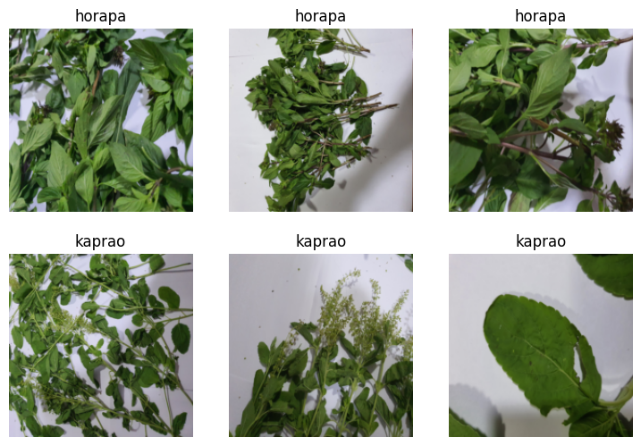

from google.colab import drive
drive.mount("/content/gdrive")Mounted at /content/gdrive
Scenario: What would be happier than eating good food? Except one thing that blocks you from doing that Horapa or Thai Basil.
In Thailand, favourite main dish of most people would be Minched Pork Kaprao (Holy Basil) with fried egg like this image:

However, it is quite hard for an excellent cook like you to eyeball and pick which one is Kaprao or Horapa. If you choose the wrong ingredient, this can cause negative effect to the taste of the delicious Kaprao and you do not want it to happen Right?
Therefore, the objective of this project is to let the machine help you classify which one is Kaprao that you want and ditch the ugly taste (in my opinion) Horapa out!
First, we need to setup an access to Google Drive. This is to persist data or artifacts in a local drive even when we are not connected to Google Colab.
from google.colab import drive
drive.mount("/content/gdrive")Mounted at /content/gdriveThen, install fastai and duckduckgo-search as necessary dependencies and import them.
!pip install -Uqq fastai duckduckgo-search ━━━━━━━━━━━━━━━━━━━━━━━━━━━━━━━━━━━━━━━━ 5.7/5.7 MB 22.7 MB/s eta 0:00:00
━━━━━━━━━━━━━━━━━━━━━━━━━━━━━━━━━━━━━━━━ 8.0/8.0 MB 49.3 MB/s eta 0:00:00Next, we need to download dataset. Here I use git clone to download a repo which contains our dataset to local runtime. After that, unzip -d to extract and move them to mounted Google Drive. Don’t forget to mkdir before hand.
!git clone https://github.com/TAUTOLOGY-EDUCATION/DATASET.gitCloning into 'DATASET'...
remote: Enumerating objects: 1301, done.
remote: Counting objects: 100% (16/16), done.
remote: Compressing objects: 100% (12/12), done.
remote: Total 1301 (delta 4), reused 12 (delta 3), pack-reused 1285
Receiving objects: 100% (1301/1301), 1.96 GiB | 38.53 MiB/s, done.
Resolving deltas: 100% (12/12), done.
Filtering content: 100% (3/3), 5.02 GiB | 55.93 MiB/s, done.!mkdir -p "gdrive/My Drive/practical-deep-learning/horapa-vs-kaprao/data"
!unzip /content/DATASET/HorapaVsKaprao/horapa-01.zip -d "gdrive/My Drive/practical-deep-learning/horapa-vs-kaprao/data" && unzip /content/DATASET/HorapaVsKaprao/kaprao.zip -d "gdrive/My Drive/practical-deep-learning/horapa-vs-kaprao/data"Archive: /content/DATASET/HorapaVsKaprao/horapa-01.zip
inflating: gdrive/My Drive/practical-deep-learning/horapa-vs-kaprao/data/horapa/20220425_233046.jpg
inflating: gdrive/My Drive/practical-deep-learning/horapa-vs-kaprao/data/horapa/20220425_233042(0).jpg
inflating: gdrive/My Drive/practical-deep-learning/horapa-vs-kaprao/data/horapa/20220425_233140.jpg
inflating: gdrive/My Drive/practical-deep-learning/horapa-vs-kaprao/data/horapa/20220425_233148.jpg
inflating: gdrive/My Drive/practical-deep-learning/horapa-vs-kaprao/data/horapa/20220425_233052.jpg
inflating: gdrive/My Drive/practical-deep-learning/horapa-vs-kaprao/data/horapa/20220425_233149.jpg
inflating: gdrive/My Drive/practical-deep-learning/horapa-vs-kaprao/data/horapa/20220425_233112.jpg
inflating: gdrive/My Drive/practical-deep-learning/horapa-vs-kaprao/data/horapa/20220425_233055.jpg
inflating: gdrive/My Drive/practical-deep-learning/horapa-vs-kaprao/data/horapa/20220425_233146.jpg
inflating: gdrive/My Drive/practical-deep-learning/horapa-vs-kaprao/data/horapa/20220425_233047.jpg
inflating: gdrive/My Drive/practical-deep-learning/horapa-vs-kaprao/data/horapa/20220425_233147.jpg
inflating: gdrive/My Drive/practical-deep-learning/horapa-vs-kaprao/data/horapa/20220425_233151.jpg
inflating: gdrive/My Drive/practical-deep-learning/horapa-vs-kaprao/data/horapa/20220425_233049.jpg
inflating: gdrive/My Drive/practical-deep-learning/horapa-vs-kaprao/data/horapa/20220425_233108.jpg
inflating: gdrive/My Drive/practical-deep-learning/horapa-vs-kaprao/data/horapa/20220425_233101.jpg
inflating: gdrive/My Drive/practical-deep-learning/horapa-vs-kaprao/data/horapa/20220425_233111.jpg
inflating: gdrive/My Drive/practical-deep-learning/horapa-vs-kaprao/data/horapa/20220425_233044.jpg
inflating: gdrive/My Drive/practical-deep-learning/horapa-vs-kaprao/data/horapa/20220425_233028.jpg
inflating: gdrive/My Drive/practical-deep-learning/horapa-vs-kaprao/data/horapa/20220425_233051.jpg
inflating: gdrive/My Drive/practical-deep-learning/horapa-vs-kaprao/data/horapa/20220425_233157.jpg
inflating: gdrive/My Drive/practical-deep-learning/horapa-vs-kaprao/data/horapa/20220425_233145.jpg
inflating: gdrive/My Drive/practical-deep-learning/horapa-vs-kaprao/data/horapa/20220425_233024.jpg
inflating: gdrive/My Drive/practical-deep-learning/horapa-vs-kaprao/data/horapa/20220425_233139.jpg
inflating: gdrive/My Drive/practical-deep-learning/horapa-vs-kaprao/data/horapa/20220425_233141.jpg
inflating: gdrive/My Drive/practical-deep-learning/horapa-vs-kaprao/data/horapa/20220425_233019.jpg
inflating: gdrive/My Drive/practical-deep-learning/horapa-vs-kaprao/data/horapa/20220425_233142.jpg
inflating: gdrive/My Drive/practical-deep-learning/horapa-vs-kaprao/data/horapa/20220425_233032.jpg
inflating: gdrive/My Drive/practical-deep-learning/horapa-vs-kaprao/data/horapa/20220425_233015.jpg
inflating: gdrive/My Drive/practical-deep-learning/horapa-vs-kaprao/data/horapa/20220425_233013.jpg
inflating: gdrive/My Drive/practical-deep-learning/horapa-vs-kaprao/data/horapa/20220425_233110.jpg
inflating: gdrive/My Drive/practical-deep-learning/horapa-vs-kaprao/data/horapa/20220425_233017.jpg
inflating: gdrive/My Drive/practical-deep-learning/horapa-vs-kaprao/data/horapa/20220425_233020.jpg
inflating: gdrive/My Drive/practical-deep-learning/horapa-vs-kaprao/data/horapa/20220425_232933.jpg
inflating: gdrive/My Drive/practical-deep-learning/horapa-vs-kaprao/data/horapa/20220425_232913.jpg
inflating: gdrive/My Drive/practical-deep-learning/horapa-vs-kaprao/data/horapa/20220425_233041.jpg
inflating: gdrive/My Drive/practical-deep-learning/horapa-vs-kaprao/data/horapa/20220425_233018.jpg
inflating: gdrive/My Drive/practical-deep-learning/horapa-vs-kaprao/data/horapa/20220425_232910(0).jpg
inflating: gdrive/My Drive/practical-deep-learning/horapa-vs-kaprao/data/horapa/20220425_233012.jpg
inflating: gdrive/My Drive/practical-deep-learning/horapa-vs-kaprao/data/horapa/20220425_232922.jpg
inflating: gdrive/My Drive/practical-deep-learning/horapa-vs-kaprao/data/horapa/20220425_233138.jpg
inflating: gdrive/My Drive/practical-deep-learning/horapa-vs-kaprao/data/horapa/20220425_233016.jpg
inflating: gdrive/My Drive/practical-deep-learning/horapa-vs-kaprao/data/horapa/20220425_232925(0).jpg
inflating: gdrive/My Drive/practical-deep-learning/horapa-vs-kaprao/data/horapa/20220425_232930.jpg
inflating: gdrive/My Drive/practical-deep-learning/horapa-vs-kaprao/data/horapa/20220425_232916.jpg
inflating: gdrive/My Drive/practical-deep-learning/horapa-vs-kaprao/data/horapa/20220425_232926.jpg
inflating: gdrive/My Drive/practical-deep-learning/horapa-vs-kaprao/data/horapa/20220425_232936.jpg
inflating: gdrive/My Drive/practical-deep-learning/horapa-vs-kaprao/data/horapa/20220425_233026.jpg
inflating: gdrive/My Drive/practical-deep-learning/horapa-vs-kaprao/data/horapa/20220425_232927.jpg
inflating: gdrive/My Drive/practical-deep-learning/horapa-vs-kaprao/data/horapa/20220425_232915(0).jpg
inflating: gdrive/My Drive/practical-deep-learning/horapa-vs-kaprao/data/horapa/20220425_232911.jpg
inflating: gdrive/My Drive/practical-deep-learning/horapa-vs-kaprao/data/horapa/20220425_232923.jpg
inflating: gdrive/My Drive/practical-deep-learning/horapa-vs-kaprao/data/horapa/20220425_232935.jpg
inflating: gdrive/My Drive/practical-deep-learning/horapa-vs-kaprao/data/horapa/20220425_232918.jpg
inflating: gdrive/My Drive/practical-deep-learning/horapa-vs-kaprao/data/horapa/20220425_232921.jpg
inflating: gdrive/My Drive/practical-deep-learning/horapa-vs-kaprao/data/horapa/20220425_232917.jpg
inflating: gdrive/My Drive/practical-deep-learning/horapa-vs-kaprao/data/horapa/20220425_232915.jpg
inflating: gdrive/My Drive/practical-deep-learning/horapa-vs-kaprao/data/horapa/20220425_232858.jpg
inflating: gdrive/My Drive/practical-deep-learning/horapa-vs-kaprao/data/horapa/20220425_232928.jpg
inflating: gdrive/My Drive/practical-deep-learning/horapa-vs-kaprao/data/horapa/20220425_232857.jpg
inflating: gdrive/My Drive/practical-deep-learning/horapa-vs-kaprao/data/horapa/20220425_232840.jpg
inflating: gdrive/My Drive/practical-deep-learning/horapa-vs-kaprao/data/horapa/20220425_232931.jpg
inflating: gdrive/My Drive/practical-deep-learning/horapa-vs-kaprao/data/horapa/20220425_232848.jpg
inflating: gdrive/My Drive/practical-deep-learning/horapa-vs-kaprao/data/horapa/20220425_232907.jpg
inflating: gdrive/My Drive/practical-deep-learning/horapa-vs-kaprao/data/horapa/20220425_232920.jpg
inflating: gdrive/My Drive/practical-deep-learning/horapa-vs-kaprao/data/horapa/20220425_232925.jpg
inflating: gdrive/My Drive/practical-deep-learning/horapa-vs-kaprao/data/horapa/20220425_232855.jpg
inflating: gdrive/My Drive/practical-deep-learning/horapa-vs-kaprao/data/horapa/20220425_232851.jpg
inflating: gdrive/My Drive/practical-deep-learning/horapa-vs-kaprao/data/horapa/20220425_232908.jpg
inflating: gdrive/My Drive/practical-deep-learning/horapa-vs-kaprao/data/horapa/20220425_232843.jpg
inflating: gdrive/My Drive/practical-deep-learning/horapa-vs-kaprao/data/horapa/20220425_232853.jpg
inflating: gdrive/My Drive/practical-deep-learning/horapa-vs-kaprao/data/horapa/20220425_232828.jpg
inflating: gdrive/My Drive/practical-deep-learning/horapa-vs-kaprao/data/horapa/20220425_232827.jpg
inflating: gdrive/My Drive/practical-deep-learning/horapa-vs-kaprao/data/horapa/20220425_232849.jpg
inflating: gdrive/My Drive/practical-deep-learning/horapa-vs-kaprao/data/horapa/20220425_232859.jpg
inflating: gdrive/My Drive/practical-deep-learning/horapa-vs-kaprao/data/horapa/20220425_232914.jpg
inflating: gdrive/My Drive/practical-deep-learning/horapa-vs-kaprao/data/horapa/20220425_232830.jpg
inflating: gdrive/My Drive/practical-deep-learning/horapa-vs-kaprao/data/horapa/20220425_232832.jpg
inflating: gdrive/My Drive/practical-deep-learning/horapa-vs-kaprao/data/horapa/20220425_232836.jpg
inflating: gdrive/My Drive/practical-deep-learning/horapa-vs-kaprao/data/horapa/20220425_232816.jpg
inflating: gdrive/My Drive/practical-deep-learning/horapa-vs-kaprao/data/horapa/20220425_232837.jpg
inflating: gdrive/My Drive/practical-deep-learning/horapa-vs-kaprao/data/horapa/20220425_232839.jpg
inflating: gdrive/My Drive/practical-deep-learning/horapa-vs-kaprao/data/horapa/20220425_232810.jpg
inflating: gdrive/My Drive/practical-deep-learning/horapa-vs-kaprao/data/horapa/20220425_232856(0).jpg
inflating: gdrive/My Drive/practical-deep-learning/horapa-vs-kaprao/data/horapa/20220425_232831.jpg
inflating: gdrive/My Drive/practical-deep-learning/horapa-vs-kaprao/data/horapa/20220425_232809.jpg
inflating: gdrive/My Drive/practical-deep-learning/horapa-vs-kaprao/data/horapa/20220425_232845.jpg
inflating: gdrive/My Drive/practical-deep-learning/horapa-vs-kaprao/data/horapa/20220425_232841.jpg
inflating: gdrive/My Drive/practical-deep-learning/horapa-vs-kaprao/data/horapa/20220425_232801.jpg
inflating: gdrive/My Drive/practical-deep-learning/horapa-vs-kaprao/data/horapa/20220425_232803.jpg
inflating: gdrive/My Drive/practical-deep-learning/horapa-vs-kaprao/data/horapa/20220425_232829.jpg
inflating: gdrive/My Drive/practical-deep-learning/horapa-vs-kaprao/data/horapa/20220425_232807.jpg
inflating: gdrive/My Drive/practical-deep-learning/horapa-vs-kaprao/data/horapa/20220425_232805.jpg
inflating: gdrive/My Drive/practical-deep-learning/horapa-vs-kaprao/data/horapa/20220425_232753.jpg
inflating: gdrive/My Drive/practical-deep-learning/horapa-vs-kaprao/data/horapa/20220425_232747.jpg
inflating: gdrive/My Drive/practical-deep-learning/horapa-vs-kaprao/data/horapa/20220425_232750.jpg
inflating: gdrive/My Drive/practical-deep-learning/horapa-vs-kaprao/data/horapa/20220425_232846.jpg
inflating: gdrive/My Drive/practical-deep-learning/horapa-vs-kaprao/data/horapa/20220425_232813.jpg
inflating: gdrive/My Drive/practical-deep-learning/horapa-vs-kaprao/data/horapa/20220425_232757.jpg
inflating: gdrive/My Drive/practical-deep-learning/horapa-vs-kaprao/data/horapa/20220425_232702.jpg
inflating: gdrive/My Drive/practical-deep-learning/horapa-vs-kaprao/data/horapa/20220425_232745.jpg
inflating: gdrive/My Drive/practical-deep-learning/horapa-vs-kaprao/data/horapa/20220425_232743.jpg
inflating: gdrive/My Drive/practical-deep-learning/horapa-vs-kaprao/data/horapa/20220425_232759.jpg
inflating: gdrive/My Drive/practical-deep-learning/horapa-vs-kaprao/data/horapa/20220425_232744.jpg
inflating: gdrive/My Drive/practical-deep-learning/horapa-vs-kaprao/data/horapa/20220425_232800.jpg
inflating: gdrive/My Drive/practical-deep-learning/horapa-vs-kaprao/data/horapa/20220425_232804.jpg
inflating: gdrive/My Drive/practical-deep-learning/horapa-vs-kaprao/data/horapa/20220425_232739.jpg
inflating: gdrive/My Drive/practical-deep-learning/horapa-vs-kaprao/data/horapa/20220425_232802.jpg
inflating: gdrive/My Drive/practical-deep-learning/horapa-vs-kaprao/data/horapa/20220425_232756.jpg
inflating: gdrive/My Drive/practical-deep-learning/horapa-vs-kaprao/data/horapa/20220425_232735.jpg
inflating: gdrive/My Drive/practical-deep-learning/horapa-vs-kaprao/data/horapa/20220425_232755.jpg
inflating: gdrive/My Drive/practical-deep-learning/horapa-vs-kaprao/data/horapa/20220425_232754.jpg
inflating: gdrive/My Drive/practical-deep-learning/horapa-vs-kaprao/data/horapa/20220425_232746.jpg
inflating: gdrive/My Drive/practical-deep-learning/horapa-vs-kaprao/data/horapa/20220425_232740.jpg
inflating: gdrive/My Drive/practical-deep-learning/horapa-vs-kaprao/data/horapa/20220425_232741.jpg
inflating: gdrive/My Drive/practical-deep-learning/horapa-vs-kaprao/data/horapa/20220425_232734.jpg
inflating: gdrive/My Drive/practical-deep-learning/horapa-vs-kaprao/data/horapa/20220425_232705.jpg
inflating: gdrive/My Drive/practical-deep-learning/horapa-vs-kaprao/data/horapa/20220425_232742.jpg
inflating: gdrive/My Drive/practical-deep-learning/horapa-vs-kaprao/data/horapa/20220425_232736.jpg
inflating: gdrive/My Drive/practical-deep-learning/horapa-vs-kaprao/data/horapa/20220425_232730.jpg
inflating: gdrive/My Drive/practical-deep-learning/horapa-vs-kaprao/data/horapa/20220425_232710.jpg
inflating: gdrive/My Drive/practical-deep-learning/horapa-vs-kaprao/data/horapa/20220425_232724.jpg
inflating: gdrive/My Drive/practical-deep-learning/horapa-vs-kaprao/data/horapa/20220425_232819.jpg
inflating: gdrive/My Drive/practical-deep-learning/horapa-vs-kaprao/data/horapa/20220425_232731.jpg
inflating: gdrive/My Drive/practical-deep-learning/horapa-vs-kaprao/data/horapa/20220425_232729.jpg
inflating: gdrive/My Drive/practical-deep-learning/horapa-vs-kaprao/data/horapa/20220425_232703.jpg
inflating: gdrive/My Drive/practical-deep-learning/horapa-vs-kaprao/data/horapa/20220425_232720.jpg
inflating: gdrive/My Drive/practical-deep-learning/horapa-vs-kaprao/data/horapa/20220425_232707.jpg
inflating: gdrive/My Drive/practical-deep-learning/horapa-vs-kaprao/data/horapa/20220425_232726.jpg
inflating: gdrive/My Drive/practical-deep-learning/horapa-vs-kaprao/data/horapa/20220425_232709.jpg
inflating: gdrive/My Drive/practical-deep-learning/horapa-vs-kaprao/data/horapa/20220425_232725.jpg
inflating: gdrive/My Drive/practical-deep-learning/horapa-vs-kaprao/data/horapa/20220425_232818.jpg
inflating: gdrive/My Drive/practical-deep-learning/horapa-vs-kaprao/data/horapa/20220425_232713.jpg
inflating: gdrive/My Drive/practical-deep-learning/horapa-vs-kaprao/data/horapa/20220425_232722.jpg
inflating: gdrive/My Drive/practical-deep-learning/horapa-vs-kaprao/data/horapa/20220425_232718.jpg
inflating: gdrive/My Drive/practical-deep-learning/horapa-vs-kaprao/data/horapa/20220425_232715.jpg
inflating: gdrive/My Drive/practical-deep-learning/horapa-vs-kaprao/data/horapa/20220425_232711.jpg
inflating: gdrive/My Drive/practical-deep-learning/horapa-vs-kaprao/data/horapa/20220425_232838.jpg
inflating: gdrive/My Drive/practical-deep-learning/horapa-vs-kaprao/data/horapa/20220425_232708.jpg
inflating: gdrive/My Drive/practical-deep-learning/horapa-vs-kaprao/data/horapa/20220425_232721.jpg
inflating: gdrive/My Drive/practical-deep-learning/horapa-vs-kaprao/data/horapa/20220425_232717.jpg
inflating: gdrive/My Drive/practical-deep-learning/horapa-vs-kaprao/data/horapa/20220425_232719.jpg
inflating: gdrive/My Drive/practical-deep-learning/horapa-vs-kaprao/data/horapa/20220425_232706(0).jpg
inflating: gdrive/My Drive/practical-deep-learning/horapa-vs-kaprao/data/horapa/20220425_232714.jpg
inflating: gdrive/My Drive/practical-deep-learning/horapa-vs-kaprao/data/horapa/20220425_232700.jpg
inflating: gdrive/My Drive/practical-deep-learning/horapa-vs-kaprao/data/horapa/20220425_232657.jpg
inflating: gdrive/My Drive/practical-deep-learning/horapa-vs-kaprao/data/horapa/20220425_232717(0).jpg
inflating: gdrive/My Drive/practical-deep-learning/horapa-vs-kaprao/data/horapa/20220425_232701.jpg
inflating: gdrive/My Drive/practical-deep-learning/horapa-vs-kaprao/data/horapa/20220425_232704(0).jpg
inflating: gdrive/My Drive/practical-deep-learning/horapa-vs-kaprao/data/horapa/20220425_232706.jpg
inflating: gdrive/My Drive/practical-deep-learning/horapa-vs-kaprao/data/horapa/20220425_232909.jpg
inflating: gdrive/My Drive/practical-deep-learning/horapa-vs-kaprao/data/horapa/20220425_232704.jpg
inflating: gdrive/My Drive/practical-deep-learning/horapa-vs-kaprao/data/horapa/20220425_232812.jpg
inflating: gdrive/My Drive/practical-deep-learning/horapa-vs-kaprao/data/horapa/20220425_232702(0).jpg
inflating: gdrive/My Drive/practical-deep-learning/horapa-vs-kaprao/data/horapa/20220425_232658.jpg
inflating: gdrive/My Drive/practical-deep-learning/horapa-vs-kaprao/data/horapa/20220425_232612.jpg
inflating: gdrive/My Drive/practical-deep-learning/horapa-vs-kaprao/data/horapa/20220425_232624.jpg
inflating: gdrive/My Drive/practical-deep-learning/horapa-vs-kaprao/data/horapa/20220425_232659.jpg
inflating: gdrive/My Drive/practical-deep-learning/horapa-vs-kaprao/data/horapa/20220425_232618.jpg
inflating: gdrive/My Drive/practical-deep-learning/horapa-vs-kaprao/data/horapa/20220425_232648.jpg
inflating: gdrive/My Drive/practical-deep-learning/horapa-vs-kaprao/data/horapa/20220425_232605.jpg
inflating: gdrive/My Drive/practical-deep-learning/horapa-vs-kaprao/data/horapa/20220425_232619.jpg
inflating: gdrive/My Drive/practical-deep-learning/horapa-vs-kaprao/data/horapa/20220425_233054.jpg
inflating: gdrive/My Drive/practical-deep-learning/horapa-vs-kaprao/data/horapa/20220425_232910.jpg
inflating: gdrive/My Drive/practical-deep-learning/horapa-vs-kaprao/data/horapa/20220425_232625.jpg
inflating: gdrive/My Drive/practical-deep-learning/horapa-vs-kaprao/data/horapa/20220425_232558.jpg
inflating: gdrive/My Drive/practical-deep-learning/horapa-vs-kaprao/data/horapa/20220425_232547.jpg
inflating: gdrive/My Drive/practical-deep-learning/horapa-vs-kaprao/data/horapa/20220425_233027.jpg
inflating: gdrive/My Drive/practical-deep-learning/horapa-vs-kaprao/data/horapa/20220425_232622.jpg
inflating: gdrive/My Drive/practical-deep-learning/horapa-vs-kaprao/data/horapa/20220425_232550.jpg
inflating: gdrive/My Drive/practical-deep-learning/horapa-vs-kaprao/data/horapa/20220425_232600.jpg
inflating: gdrive/My Drive/practical-deep-learning/horapa-vs-kaprao/data/horapa/20220425_232540.jpg
inflating: gdrive/My Drive/practical-deep-learning/horapa-vs-kaprao/data/horapa/20220425_232557.jpg
inflating: gdrive/My Drive/practical-deep-learning/horapa-vs-kaprao/data/horapa/20220425_232610.jpg
inflating: gdrive/My Drive/practical-deep-learning/horapa-vs-kaprao/data/horapa/20220425_232603.jpg
inflating: gdrive/My Drive/practical-deep-learning/horapa-vs-kaprao/data/horapa/20220425_232614.jpg
inflating: gdrive/My Drive/practical-deep-learning/horapa-vs-kaprao/data/horapa/20220425_232526.jpg
inflating: gdrive/My Drive/practical-deep-learning/horapa-vs-kaprao/data/horapa/20220425_232555.jpg
inflating: gdrive/My Drive/practical-deep-learning/horapa-vs-kaprao/data/horapa/20220425_232531.jpg
inflating: gdrive/My Drive/practical-deep-learning/horapa-vs-kaprao/data/horapa/20220425_232856.jpg
inflating: gdrive/My Drive/practical-deep-learning/horapa-vs-kaprao/data/horapa/20220425_232542.jpg
inflating: gdrive/My Drive/practical-deep-learning/horapa-vs-kaprao/data/horapa/20220425_232523.jpg
inflating: gdrive/My Drive/practical-deep-learning/horapa-vs-kaprao/data/horapa/20220425_232545.jpg
inflating: gdrive/My Drive/practical-deep-learning/horapa-vs-kaprao/data/horapa/20220425_232549.jpg
inflating: gdrive/My Drive/practical-deep-learning/horapa-vs-kaprao/data/horapa/20220425_232525.jpg
inflating: gdrive/My Drive/practical-deep-learning/horapa-vs-kaprao/data/horapa/20220425_232932.jpg
inflating: gdrive/My Drive/practical-deep-learning/horapa-vs-kaprao/data/horapa/20220425_232533.jpg
inflating: gdrive/My Drive/practical-deep-learning/horapa-vs-kaprao/data/horapa/20220425_232530.jpg
inflating: gdrive/My Drive/practical-deep-learning/horapa-vs-kaprao/data/horapa/20220425_232543.jpg
inflating: gdrive/My Drive/practical-deep-learning/horapa-vs-kaprao/data/horapa/20220425_232914(0).jpg
inflating: gdrive/My Drive/practical-deep-learning/horapa-vs-kaprao/data/horapa/20220425_232504.jpg
inflating: gdrive/My Drive/practical-deep-learning/horapa-vs-kaprao/data/horapa/20220425_232518.jpg
inflating: gdrive/My Drive/practical-deep-learning/horapa-vs-kaprao/data/horapa/20220425_232456.jpg
inflating: gdrive/My Drive/practical-deep-learning/horapa-vs-kaprao/data/horapa/20220425_232444.jpg
inflating: gdrive/My Drive/practical-deep-learning/horapa-vs-kaprao/data/horapa/20220425_232515.jpg
inflating: gdrive/My Drive/practical-deep-learning/horapa-vs-kaprao/data/horapa/20220425_232458.jpg
inflating: gdrive/My Drive/practical-deep-learning/horapa-vs-kaprao/data/horapa/20220425_232447.jpg
inflating: gdrive/My Drive/practical-deep-learning/horapa-vs-kaprao/data/horapa/20220425_232500.jpg
inflating: gdrive/My Drive/practical-deep-learning/horapa-vs-kaprao/data/horapa/20220425_232502.jpg
inflating: gdrive/My Drive/practical-deep-learning/horapa-vs-kaprao/data/horapa/20220425_233109.jpg
inflating: gdrive/My Drive/practical-deep-learning/horapa-vs-kaprao/data/horapa/20220425_232514.jpg
inflating: gdrive/My Drive/practical-deep-learning/horapa-vs-kaprao/data/horapa/20220425_232929.jpg
inflating: gdrive/My Drive/practical-deep-learning/horapa-vs-kaprao/data/horapa/20220425_232934.jpg
inflating: gdrive/My Drive/practical-deep-learning/horapa-vs-kaprao/data/horapa/20220425_232517.jpg
inflating: gdrive/My Drive/practical-deep-learning/horapa-vs-kaprao/data/horapa/20220425_232455.jpg
inflating: gdrive/My Drive/practical-deep-learning/horapa-vs-kaprao/data/horapa/20220425_232442.jpg
inflating: gdrive/My Drive/practical-deep-learning/horapa-vs-kaprao/data/horapa/20220425_232437.jpg
inflating: gdrive/My Drive/practical-deep-learning/horapa-vs-kaprao/data/horapa/20220425_232446.jpg
inflating: gdrive/My Drive/practical-deep-learning/horapa-vs-kaprao/data/horapa/20220425_233058.jpg
inflating: gdrive/My Drive/practical-deep-learning/horapa-vs-kaprao/data/horapa/20220425_232430.jpg
inflating: gdrive/My Drive/practical-deep-learning/horapa-vs-kaprao/data/horapa/20220425_233043.jpg
inflating: gdrive/My Drive/practical-deep-learning/horapa-vs-kaprao/data/horapa/20220425_232439.jpg
inflating: gdrive/My Drive/practical-deep-learning/horapa-vs-kaprao/data/horapa/20220425_232436.jpg
inflating: gdrive/My Drive/practical-deep-learning/horapa-vs-kaprao/data/horapa/20220425_232751.jpg
inflating: gdrive/My Drive/practical-deep-learning/horapa-vs-kaprao/data/horapa/20220425_233100.jpg
inflating: gdrive/My Drive/practical-deep-learning/horapa-vs-kaprao/data/horapa/20220425_232413.jpg
inflating: gdrive/My Drive/practical-deep-learning/horapa-vs-kaprao/data/horapa/20220425_232412.jpg
inflating: gdrive/My Drive/practical-deep-learning/horapa-vs-kaprao/data/horapa/20220425_232416.jpg
inflating: gdrive/My Drive/practical-deep-learning/horapa-vs-kaprao/data/horapa/20220425_232428.jpg
inflating: gdrive/My Drive/practical-deep-learning/horapa-vs-kaprao/data/horapa/20220425_232407.jpg
inflating: gdrive/My Drive/practical-deep-learning/horapa-vs-kaprao/data/horapa/20220425_233200.jpg
inflating: gdrive/My Drive/practical-deep-learning/horapa-vs-kaprao/data/horapa/20220425_232432.jpg
inflating: gdrive/My Drive/practical-deep-learning/horapa-vs-kaprao/data/horapa/20220425_233029.jpg
inflating: gdrive/My Drive/practical-deep-learning/horapa-vs-kaprao/data/horapa/20220425_232410.jpg
inflating: gdrive/My Drive/practical-deep-learning/horapa-vs-kaprao/data/horapa/20220425_232359.jpg
inflating: gdrive/My Drive/practical-deep-learning/horapa-vs-kaprao/data/horapa/20220425_232405.jpg
inflating: gdrive/My Drive/practical-deep-learning/horapa-vs-kaprao/data/horapa/20220425_232415.jpg
inflating: gdrive/My Drive/practical-deep-learning/horapa-vs-kaprao/data/horapa/20220425_232408.jpg
inflating: gdrive/My Drive/practical-deep-learning/horapa-vs-kaprao/data/horapa/20220425_233048.jpg
inflating: gdrive/My Drive/practical-deep-learning/horapa-vs-kaprao/data/horapa/20220425_233050.jpg
inflating: gdrive/My Drive/practical-deep-learning/horapa-vs-kaprao/data/horapa/20220425_232406.jpg
inflating: gdrive/My Drive/practical-deep-learning/horapa-vs-kaprao/data/horapa/20220425_232402.jpg
inflating: gdrive/My Drive/practical-deep-learning/horapa-vs-kaprao/data/horapa/20220425_233056.jpg
inflating: gdrive/My Drive/practical-deep-learning/horapa-vs-kaprao/data/horapa/20220425_232403.jpg
inflating: gdrive/My Drive/practical-deep-learning/horapa-vs-kaprao/data/horapa/20220425_233202.jpg
inflating: gdrive/My Drive/practical-deep-learning/horapa-vs-kaprao/data/horapa/20220425_232404.jpg
inflating: gdrive/My Drive/practical-deep-learning/horapa-vs-kaprao/data/horapa/20220425_233057.jpg
inflating: gdrive/My Drive/practical-deep-learning/horapa-vs-kaprao/data/horapa/20220425_232357.jpg
inflating: gdrive/My Drive/practical-deep-learning/horapa-vs-kaprao/data/horapa/20220425_233144.jpg
inflating: gdrive/My Drive/practical-deep-learning/horapa-vs-kaprao/data/horapa/20220425_232712.jpg
inflating: gdrive/My Drive/practical-deep-learning/horapa-vs-kaprao/data/horapa/20220425_233154.jpg
inflating: gdrive/My Drive/practical-deep-learning/horapa-vs-kaprao/data/horapa/20220425_232608.jpg
inflating: gdrive/My Drive/practical-deep-learning/horapa-vs-kaprao/data/horapa/20220425_232728.jpg
inflating: gdrive/My Drive/practical-deep-learning/horapa-vs-kaprao/data/horapa/20220425_233150.jpg
inflating: gdrive/My Drive/practical-deep-learning/horapa-vs-kaprao/data/horapa/20220425_233014.jpg
inflating: gdrive/My Drive/practical-deep-learning/horapa-vs-kaprao/data/horapa/20220425_232353.jpg
inflating: gdrive/My Drive/practical-deep-learning/horapa-vs-kaprao/data/horapa/20220425_232005.jpg
inflating: gdrive/My Drive/practical-deep-learning/horapa-vs-kaprao/data/horapa/20220425_231955.jpg
inflating: gdrive/My Drive/practical-deep-learning/horapa-vs-kaprao/data/horapa/20220425_232228.jpg
inflating: gdrive/My Drive/practical-deep-learning/horapa-vs-kaprao/data/horapa/20220425_232313.jpg
inflating: gdrive/My Drive/practical-deep-learning/horapa-vs-kaprao/data/horapa/20220425_232252.jpg
inflating: gdrive/My Drive/practical-deep-learning/horapa-vs-kaprao/data/horapa/20220425_232000.jpg
inflating: gdrive/My Drive/practical-deep-learning/horapa-vs-kaprao/data/horapa/20220425_232306.jpg
inflating: gdrive/My Drive/practical-deep-learning/horapa-vs-kaprao/data/horapa/20220425_232351.jpg
inflating: gdrive/My Drive/practical-deep-learning/horapa-vs-kaprao/data/horapa/20220425_232018.jpg
inflating: gdrive/My Drive/practical-deep-learning/horapa-vs-kaprao/data/horapa/20220425_232015.jpg
inflating: gdrive/My Drive/practical-deep-learning/horapa-vs-kaprao/data/horapa/20220425_232335.jpg
inflating: gdrive/My Drive/practical-deep-learning/horapa-vs-kaprao/data/horapa/20220425_232232.jpg
inflating: gdrive/My Drive/practical-deep-learning/horapa-vs-kaprao/data/horapa/20220425_231938.jpg
inflating: gdrive/My Drive/practical-deep-learning/horapa-vs-kaprao/data/horapa/20220425_232340.jpg
inflating: gdrive/My Drive/practical-deep-learning/horapa-vs-kaprao/data/horapa/20220425_232235.jpg
inflating: gdrive/My Drive/practical-deep-learning/horapa-vs-kaprao/data/horapa/20220425_231937.jpg
inflating: gdrive/My Drive/practical-deep-learning/horapa-vs-kaprao/data/horapa/20220425_232328.jpg
inflating: gdrive/My Drive/practical-deep-learning/horapa-vs-kaprao/data/horapa/20220425_232255.jpg
inflating: gdrive/My Drive/practical-deep-learning/horapa-vs-kaprao/data/horapa/20220425_231951.jpg
inflating: gdrive/My Drive/practical-deep-learning/horapa-vs-kaprao/data/horapa/20220425_231940.jpg
inflating: gdrive/My Drive/practical-deep-learning/horapa-vs-kaprao/data/horapa/20220425_231914.jpg
inflating: gdrive/My Drive/practical-deep-learning/horapa-vs-kaprao/data/horapa/20220425_231936.jpg
inflating: gdrive/My Drive/practical-deep-learning/horapa-vs-kaprao/data/horapa/20220425_232321.jpg
inflating: gdrive/My Drive/practical-deep-learning/horapa-vs-kaprao/data/horapa/20220425_231859.jpg
inflating: gdrive/My Drive/practical-deep-learning/horapa-vs-kaprao/data/horapa/20220425_231937(0).jpg
inflating: gdrive/My Drive/practical-deep-learning/horapa-vs-kaprao/data/horapa/20220425_231905.jpg
inflating: gdrive/My Drive/practical-deep-learning/horapa-vs-kaprao/data/horapa/20220425_231916.jpg
inflating: gdrive/My Drive/practical-deep-learning/horapa-vs-kaprao/data/horapa/20220425_231853.jpg
inflating: gdrive/My Drive/practical-deep-learning/horapa-vs-kaprao/data/horapa/20220425_231934.jpg
inflating: gdrive/My Drive/practical-deep-learning/horapa-vs-kaprao/data/horapa/20220425_231910.jpg
inflating: gdrive/My Drive/practical-deep-learning/horapa-vs-kaprao/data/horapa/20220425_231909.jpg
inflating: gdrive/My Drive/practical-deep-learning/horapa-vs-kaprao/data/horapa/20220425_231854.jpg
inflating: gdrive/My Drive/practical-deep-learning/horapa-vs-kaprao/data/horapa/20220425_231922.jpg
inflating: gdrive/My Drive/practical-deep-learning/horapa-vs-kaprao/data/horapa/20220425_231908.jpg
inflating: gdrive/My Drive/practical-deep-learning/horapa-vs-kaprao/data/horapa/20220425_231847.jpg
inflating: gdrive/My Drive/practical-deep-learning/horapa-vs-kaprao/data/horapa/20220425_231902.jpg
inflating: gdrive/My Drive/practical-deep-learning/horapa-vs-kaprao/data/horapa/20220425_231900.jpg
inflating: gdrive/My Drive/practical-deep-learning/horapa-vs-kaprao/data/horapa/20220425_231836.jpg
inflating: gdrive/My Drive/practical-deep-learning/horapa-vs-kaprao/data/horapa/20220425_231825.jpg
inflating: gdrive/My Drive/practical-deep-learning/horapa-vs-kaprao/data/horapa/20220425_231921.jpg
inflating: gdrive/My Drive/practical-deep-learning/horapa-vs-kaprao/data/horapa/20220425_231912.jpg
inflating: gdrive/My Drive/practical-deep-learning/horapa-vs-kaprao/data/horapa/20220425_231820.jpg
inflating: gdrive/My Drive/practical-deep-learning/horapa-vs-kaprao/data/horapa/20220425_231846.jpg
inflating: gdrive/My Drive/practical-deep-learning/horapa-vs-kaprao/data/horapa/20220425_231822.jpg
inflating: gdrive/My Drive/practical-deep-learning/horapa-vs-kaprao/data/horapa/20220425_232353(0).jpg
inflating: gdrive/My Drive/practical-deep-learning/horapa-vs-kaprao/data/horapa/20220425_231811.jpg
inflating: gdrive/My Drive/practical-deep-learning/horapa-vs-kaprao/data/horapa/20220425_231821.jpg
inflating: gdrive/My Drive/practical-deep-learning/horapa-vs-kaprao/data/horapa/20220425_231841.jpg
inflating: gdrive/My Drive/practical-deep-learning/horapa-vs-kaprao/data/horapa/20220425_231947.jpg
inflating: gdrive/My Drive/practical-deep-learning/horapa-vs-kaprao/data/horapa/20220425_231813.jpg
inflating: gdrive/My Drive/practical-deep-learning/horapa-vs-kaprao/data/horapa/20220425_233059.jpg
inflating: gdrive/My Drive/practical-deep-learning/horapa-vs-kaprao/data/horapa/20220425_231818.jpg
inflating: gdrive/My Drive/practical-deep-learning/horapa-vs-kaprao/data/horapa/20220425_231759.jpg
inflating: gdrive/My Drive/practical-deep-learning/horapa-vs-kaprao/data/horapa/20220425_231834.jpg
inflating: gdrive/My Drive/practical-deep-learning/horapa-vs-kaprao/data/horapa/20220425_231756.jpg
inflating: gdrive/My Drive/practical-deep-learning/horapa-vs-kaprao/data/horapa/20220425_232250.jpg
inflating: gdrive/My Drive/practical-deep-learning/horapa-vs-kaprao/data/horapa/20220425_231814.jpg
inflating: gdrive/My Drive/practical-deep-learning/horapa-vs-kaprao/data/horapa/20220425_231722.jpg
inflating: gdrive/My Drive/practical-deep-learning/horapa-vs-kaprao/data/horapa/20220425_231758.jpg
inflating: gdrive/My Drive/practical-deep-learning/horapa-vs-kaprao/data/horapa/20220425_231809.jpg
inflating: gdrive/My Drive/practical-deep-learning/horapa-vs-kaprao/data/horapa/20220425_231724.jpg
inflating: gdrive/My Drive/practical-deep-learning/horapa-vs-kaprao/data/horapa/20220425_231755.jpg
inflating: gdrive/My Drive/practical-deep-learning/horapa-vs-kaprao/data/horapa/20220425_231805.jpg
inflating: gdrive/My Drive/practical-deep-learning/horapa-vs-kaprao/data/horapa/20220425_231706.jpg
inflating: gdrive/My Drive/practical-deep-learning/horapa-vs-kaprao/data/horapa/20220425_231652.jpg
inflating: gdrive/My Drive/practical-deep-learning/horapa-vs-kaprao/data/horapa/20220425_231654.jpg
inflating: gdrive/My Drive/practical-deep-learning/horapa-vs-kaprao/data/horapa/20220425_231715.jpg
inflating: gdrive/My Drive/practical-deep-learning/horapa-vs-kaprao/data/horapa/20220425_231707.jpg
inflating: gdrive/My Drive/practical-deep-learning/horapa-vs-kaprao/data/horapa/20220425_231615(0).jpg
inflating: gdrive/My Drive/practical-deep-learning/horapa-vs-kaprao/data/horapa/20220425_231709.jpg
inflating: gdrive/My Drive/practical-deep-learning/horapa-vs-kaprao/data/horapa/20220425_231621.jpg
inflating: gdrive/My Drive/practical-deep-learning/horapa-vs-kaprao/data/horapa/20220425_231613.jpg
inflating: gdrive/My Drive/practical-deep-learning/horapa-vs-kaprao/data/horapa/20220425_231633.jpg
inflating: gdrive/My Drive/practical-deep-learning/horapa-vs-kaprao/data/horapa/20220425_231610.jpg
inflating: gdrive/My Drive/practical-deep-learning/horapa-vs-kaprao/data/horapa/20220425_231538.jpg
inflating: gdrive/My Drive/practical-deep-learning/horapa-vs-kaprao/data/horapa/20220425_231522.jpg
inflating: gdrive/My Drive/practical-deep-learning/horapa-vs-kaprao/data/horapa/20220425_231703.jpg
inflating: gdrive/My Drive/practical-deep-learning/horapa-vs-kaprao/data/horapa/20220425_231806.jpg
inflating: gdrive/My Drive/practical-deep-learning/horapa-vs-kaprao/data/horapa/20220425_231534.jpg
inflating: gdrive/My Drive/practical-deep-learning/horapa-vs-kaprao/data/horapa/20220425_231559.jpg
inflating: gdrive/My Drive/practical-deep-learning/horapa-vs-kaprao/data/horapa/20220425_231546.jpg
inflating: gdrive/My Drive/practical-deep-learning/horapa-vs-kaprao/data/horapa/20220425_231647.jpg
inflating: gdrive/My Drive/practical-deep-learning/horapa-vs-kaprao/data/horapa/20220425_231615.jpg
inflating: gdrive/My Drive/practical-deep-learning/horapa-vs-kaprao/data/horapa/20220425_231606(0).jpg
inflating: gdrive/My Drive/practical-deep-learning/horapa-vs-kaprao/data/horapa/20220425_231531.jpg
inflating: gdrive/My Drive/practical-deep-learning/horapa-vs-kaprao/data/horapa/20220425_231541.jpg
inflating: gdrive/My Drive/practical-deep-learning/horapa-vs-kaprao/data/horapa/20220425_231527.jpg
inflating: gdrive/My Drive/practical-deep-learning/horapa-vs-kaprao/data/horapa/20220425_231525.jpg
inflating: gdrive/My Drive/practical-deep-learning/horapa-vs-kaprao/data/horapa/20220425_231521.jpg
inflating: gdrive/My Drive/practical-deep-learning/horapa-vs-kaprao/data/horapa/20220425_231856.jpg
inflating: gdrive/My Drive/practical-deep-learning/horapa-vs-kaprao/data/horapa/20220425_231631.jpg
inflating: gdrive/My Drive/practical-deep-learning/horapa-vs-kaprao/data/horapa/20220425_231627.jpg
inflating: gdrive/My Drive/practical-deep-learning/horapa-vs-kaprao/data/horapa/20220425_231427.jpg
inflating: gdrive/My Drive/practical-deep-learning/horapa-vs-kaprao/data/horapa/20220425_231425.jpg
inflating: gdrive/My Drive/practical-deep-learning/horapa-vs-kaprao/data/horapa/20220425_225006.jpg
inflating: gdrive/My Drive/practical-deep-learning/horapa-vs-kaprao/data/horapa/20220425_231436.jpg
inflating: gdrive/My Drive/practical-deep-learning/horapa-vs-kaprao/data/horapa/20220425_225012(0).jpg
inflating: gdrive/My Drive/practical-deep-learning/horapa-vs-kaprao/data/horapa/20220425_231518.jpg
inflating: gdrive/My Drive/practical-deep-learning/horapa-vs-kaprao/data/horapa/20220425_231512.jpg
inflating: gdrive/My Drive/practical-deep-learning/horapa-vs-kaprao/data/horapa/20220425_231511.jpg
inflating: gdrive/My Drive/practical-deep-learning/horapa-vs-kaprao/data/horapa/20220425_231711.jpg
inflating: gdrive/My Drive/practical-deep-learning/horapa-vs-kaprao/data/horapa/20220425_225013.jpg
inflating: gdrive/My Drive/practical-deep-learning/horapa-vs-kaprao/data/horapa/20220425_224957.jpg
inflating: gdrive/My Drive/practical-deep-learning/horapa-vs-kaprao/data/horapa/20220425_231435.jpg
inflating: gdrive/My Drive/practical-deep-learning/horapa-vs-kaprao/data/horapa/20220425_225003.jpg
inflating: gdrive/My Drive/practical-deep-learning/horapa-vs-kaprao/data/horapa/20220425_224955.jpg
inflating: gdrive/My Drive/practical-deep-learning/horapa-vs-kaprao/data/horapa/20220425_225007.jpg
inflating: gdrive/My Drive/practical-deep-learning/horapa-vs-kaprao/data/horapa/20220425_225001.jpg
inflating: gdrive/My Drive/practical-deep-learning/horapa-vs-kaprao/data/horapa/20220425_225012.jpg
inflating: gdrive/My Drive/practical-deep-learning/horapa-vs-kaprao/data/horapa/20220425_224954.jpg
inflating: gdrive/My Drive/practical-deep-learning/horapa-vs-kaprao/data/horapa/20220425_225004.jpg
inflating: gdrive/My Drive/practical-deep-learning/horapa-vs-kaprao/data/horapa/20220425_224935.jpg
inflating: gdrive/My Drive/practical-deep-learning/horapa-vs-kaprao/data/horapa/20220425_224941.jpg
inflating: gdrive/My Drive/practical-deep-learning/horapa-vs-kaprao/data/horapa/20220425_224949.jpg
inflating: gdrive/My Drive/practical-deep-learning/horapa-vs-kaprao/data/horapa/20220425_225010.jpg
inflating: gdrive/My Drive/practical-deep-learning/horapa-vs-kaprao/data/horapa/20220425_224928.jpg
inflating: gdrive/My Drive/practical-deep-learning/horapa-vs-kaprao/data/horapa/20220425_224834.jpg
inflating: gdrive/My Drive/practical-deep-learning/horapa-vs-kaprao/data/horapa/20220425_233042.jpg
inflating: gdrive/My Drive/practical-deep-learning/horapa-vs-kaprao/data/horapa/20220425_224907.jpg
inflating: gdrive/My Drive/practical-deep-learning/horapa-vs-kaprao/data/horapa/20220425_224926.jpg
inflating: gdrive/My Drive/practical-deep-learning/horapa-vs-kaprao/data/horapa/20220425_224828.jpg
inflating: gdrive/My Drive/practical-deep-learning/horapa-vs-kaprao/data/horapa/20220425_224833.jpg
inflating: gdrive/My Drive/practical-deep-learning/horapa-vs-kaprao/data/horapa/20220425_224856.jpg
inflating: gdrive/My Drive/practical-deep-learning/horapa-vs-kaprao/data/horapa/20220425_224829.jpg
inflating: gdrive/My Drive/practical-deep-learning/horapa-vs-kaprao/data/horapa/20220425_224922.jpg
inflating: gdrive/My Drive/practical-deep-learning/horapa-vs-kaprao/data/horapa/20220425_224902.jpg
inflating: gdrive/My Drive/practical-deep-learning/horapa-vs-kaprao/data/horapa/20220425_224825.jpg
inflating: gdrive/My Drive/practical-deep-learning/horapa-vs-kaprao/data/horapa/20220425_224914.jpg
inflating: gdrive/My Drive/practical-deep-learning/horapa-vs-kaprao/data/horapa/20220425_224824.jpg
inflating: gdrive/My Drive/practical-deep-learning/horapa-vs-kaprao/data/horapa/20220425_224858.jpg
inflating: gdrive/My Drive/practical-deep-learning/horapa-vs-kaprao/data/horapa/20220425_224820.jpg
inflating: gdrive/My Drive/practical-deep-learning/horapa-vs-kaprao/data/horapa/20220425_224835.jpg
inflating: gdrive/My Drive/practical-deep-learning/horapa-vs-kaprao/data/horapa/20220425_224813.jpg
inflating: gdrive/My Drive/practical-deep-learning/horapa-vs-kaprao/data/horapa/20220425_231515.jpg
inflating: gdrive/My Drive/practical-deep-learning/horapa-vs-kaprao/data/horapa/20220425_224812.jpg
inflating: gdrive/My Drive/practical-deep-learning/horapa-vs-kaprao/data/horapa/20220425_224806.jpg
inflating: gdrive/My Drive/practical-deep-learning/horapa-vs-kaprao/data/horapa/20220425_224737.jpg
inflating: gdrive/My Drive/practical-deep-learning/horapa-vs-kaprao/data/horapa/20220425_224804.jpg
inflating: gdrive/My Drive/practical-deep-learning/horapa-vs-kaprao/data/horapa/20220425_224733.jpg
inflating: gdrive/My Drive/practical-deep-learning/horapa-vs-kaprao/data/horapa/20220425_224750.jpg
inflating: gdrive/My Drive/practical-deep-learning/horapa-vs-kaprao/data/horapa/20220425_224743.jpg
inflating: gdrive/My Drive/practical-deep-learning/horapa-vs-kaprao/data/horapa/20220425_224720.jpg
inflating: gdrive/My Drive/practical-deep-learning/horapa-vs-kaprao/data/horapa/20220425_224736.jpg
inflating: gdrive/My Drive/practical-deep-learning/horapa-vs-kaprao/data/horapa/20220425_224742.jpg
inflating: gdrive/My Drive/practical-deep-learning/horapa-vs-kaprao/data/horapa/20220425_224831.jpg
inflating: gdrive/My Drive/practical-deep-learning/horapa-vs-kaprao/data/horapa/20220425_224808.jpg
inflating: gdrive/My Drive/practical-deep-learning/horapa-vs-kaprao/data/horapa/20220425_224816.jpg
inflating: gdrive/My Drive/practical-deep-learning/horapa-vs-kaprao/data/horapa/20220425_224735.jpg
inflating: gdrive/My Drive/practical-deep-learning/horapa-vs-kaprao/data/horapa/20220425_224727.jpg
inflating: gdrive/My Drive/practical-deep-learning/horapa-vs-kaprao/data/horapa/20220425_224730.jpg
inflating: gdrive/My Drive/practical-deep-learning/horapa-vs-kaprao/data/horapa/20220425_224728.jpg
inflating: gdrive/My Drive/practical-deep-learning/horapa-vs-kaprao/data/horapa/20220425_224631.jpg
inflating: gdrive/My Drive/practical-deep-learning/horapa-vs-kaprao/data/horapa/20220425_224629.jpg
inflating: gdrive/My Drive/practical-deep-learning/horapa-vs-kaprao/data/horapa/20220425_231519.jpg
inflating: gdrive/My Drive/practical-deep-learning/horapa-vs-kaprao/data/horapa/20220425_224627.jpg
inflating: gdrive/My Drive/practical-deep-learning/horapa-vs-kaprao/data/horapa/20220425_224613.jpg
inflating: gdrive/My Drive/practical-deep-learning/horapa-vs-kaprao/data/horapa/20220425_224815.jpg
inflating: gdrive/My Drive/practical-deep-learning/horapa-vs-kaprao/data/horapa/20220425_224558.jpg
inflating: gdrive/My Drive/practical-deep-learning/horapa-vs-kaprao/data/horapa/20220425_224617.jpg
inflating: gdrive/My Drive/practical-deep-learning/horapa-vs-kaprao/data/horapa/20220425_224615.jpg
inflating: gdrive/My Drive/practical-deep-learning/horapa-vs-kaprao/data/horapa/20220425_224908.jpg
inflating: gdrive/My Drive/practical-deep-learning/horapa-vs-kaprao/data/horapa/20220425_224619.jpg
inflating: gdrive/My Drive/practical-deep-learning/horapa-vs-kaprao/data/horapa/20220425_224626.jpg
inflating: gdrive/My Drive/practical-deep-learning/horapa-vs-kaprao/data/horapa/20220425_224602.jpg
inflating: gdrive/My Drive/practical-deep-learning/horapa-vs-kaprao/data/horapa/20220425_224604.jpg
inflating: gdrive/My Drive/practical-deep-learning/horapa-vs-kaprao/data/horapa/20220425_224552.jpg
inflating: gdrive/My Drive/practical-deep-learning/horapa-vs-kaprao/data/horapa/20220425_224459.jpg
inflating: gdrive/My Drive/practical-deep-learning/horapa-vs-kaprao/data/horapa/20220425_224548.jpg
inflating: gdrive/My Drive/practical-deep-learning/horapa-vs-kaprao/data/horapa/20220425_224456.jpg
inflating: gdrive/My Drive/practical-deep-learning/horapa-vs-kaprao/data/horapa/20220425_224453.jpg
inflating: gdrive/My Drive/practical-deep-learning/horapa-vs-kaprao/data/horapa/20220425_224436.jpg
inflating: gdrive/My Drive/practical-deep-learning/horapa-vs-kaprao/data/horapa/20220425_224448.jpg
inflating: gdrive/My Drive/practical-deep-learning/horapa-vs-kaprao/data/horapa/20220425_224431.jpg
inflating: gdrive/My Drive/practical-deep-learning/horapa-vs-kaprao/data/horapa/20220425_224342.jpg
inflating: gdrive/My Drive/practical-deep-learning/horapa-vs-kaprao/data/horapa/20220425_224441.jpg
inflating: gdrive/My Drive/practical-deep-learning/horapa-vs-kaprao/data/horapa/20220425_224452.jpg
inflating: gdrive/My Drive/practical-deep-learning/horapa-vs-kaprao/data/horapa/20220425_224500.jpg
inflating: gdrive/My Drive/practical-deep-learning/horapa-vs-kaprao/data/horapa/20220425_224438.jpg
inflating: gdrive/My Drive/practical-deep-learning/horapa-vs-kaprao/data/horapa/20220425_224343.jpg
inflating: gdrive/My Drive/practical-deep-learning/horapa-vs-kaprao/data/horapa/20220425_224444.jpg
inflating: gdrive/My Drive/practical-deep-learning/horapa-vs-kaprao/data/horapa/20220425_224445.jpg
inflating: gdrive/My Drive/practical-deep-learning/horapa-vs-kaprao/data/horapa/20220425_224418.jpg
inflating: gdrive/My Drive/practical-deep-learning/horapa-vs-kaprao/data/horapa/20220425_224426.jpg
inflating: gdrive/My Drive/practical-deep-learning/horapa-vs-kaprao/data/horapa/20220425_224341.jpg
inflating: gdrive/My Drive/practical-deep-learning/horapa-vs-kaprao/data/horapa/20220425_224334.jpg
inflating: gdrive/My Drive/practical-deep-learning/horapa-vs-kaprao/data/horapa/20220425_224601.jpg
inflating: gdrive/My Drive/practical-deep-learning/horapa-vs-kaprao/data/horapa/20220425_224411.jpg
inflating: gdrive/My Drive/practical-deep-learning/horapa-vs-kaprao/data/horapa/20220425_232243.jpg
inflating: gdrive/My Drive/practical-deep-learning/horapa-vs-kaprao/data/horapa/20220425_232349.jpg
inflating: gdrive/My Drive/practical-deep-learning/horapa-vs-kaprao/data/horapa/20220425_224424.jpg
inflating: gdrive/My Drive/practical-deep-learning/horapa-vs-kaprao/data/horapa/20220425_224421.jpg
inflating: gdrive/My Drive/practical-deep-learning/horapa-vs-kaprao/data/horapa/20220425_224332.jpg
inflating: gdrive/My Drive/practical-deep-learning/horapa-vs-kaprao/data/horapa/20220425_224328.jpg
inflating: gdrive/My Drive/practical-deep-learning/horapa-vs-kaprao/data/horapa/20220425_224358.jpg
inflating: gdrive/My Drive/practical-deep-learning/horapa-vs-kaprao/data/horapa/20220425_224333.jpg
inflating: gdrive/My Drive/practical-deep-learning/horapa-vs-kaprao/data/horapa/20220425_224354.jpg
inflating: gdrive/My Drive/practical-deep-learning/horapa-vs-kaprao/data/horapa/20220425_224331.jpg
inflating: gdrive/My Drive/practical-deep-learning/horapa-vs-kaprao/data/horapa/20220425_224630.jpg
inflating: gdrive/My Drive/practical-deep-learning/horapa-vs-kaprao/data/horapa/20220425_232912.jpg
inflating: gdrive/My Drive/practical-deep-learning/horapa-vs-kaprao/data/horapa/20220425_224400.jpg
inflating: gdrive/My Drive/practical-deep-learning/horapa-vs-kaprao/data/horapa/20220425_231952.jpg
inflating: gdrive/My Drive/practical-deep-learning/horapa-vs-kaprao/data/horapa/20220425_224357.jpg
inflating: gdrive/My Drive/practical-deep-learning/horapa-vs-kaprao/data/horapa/20220425_224329.jpg
inflating: gdrive/My Drive/practical-deep-learning/horapa-vs-kaprao/data/horapa/20220425_224313.jpg
inflating: gdrive/My Drive/practical-deep-learning/horapa-vs-kaprao/data/horapa/20220425_224330.jpg
inflating: gdrive/My Drive/practical-deep-learning/horapa-vs-kaprao/data/horapa/20220425_232342.jpg
inflating: gdrive/My Drive/practical-deep-learning/horapa-vs-kaprao/data/horapa/20220425_232308.jpg
inflating: gdrive/My Drive/practical-deep-learning/horapa-vs-kaprao/data/horapa/20220425_224349.jpg
inflating: gdrive/My Drive/practical-deep-learning/horapa-vs-kaprao/data/horapa/20220425_232008.jpg
inflating: gdrive/My Drive/practical-deep-learning/horapa-vs-kaprao/data/horapa/20220425_231958.jpg
inflating: gdrive/My Drive/practical-deep-learning/horapa-vs-kaprao/data/horapa/20220425_232017.jpg
inflating: gdrive/My Drive/practical-deep-learning/horapa-vs-kaprao/data/horapa/20220425_232246.jpg
inflating: gdrive/My Drive/practical-deep-learning/horapa-vs-kaprao/data/horapa/20220425_224356.jpg
inflating: gdrive/My Drive/practical-deep-learning/horapa-vs-kaprao/data/horapa/20220425_232325.jpg
inflating: gdrive/My Drive/practical-deep-learning/horapa-vs-kaprao/data/horapa/20220425_224348.jpg
inflating: gdrive/My Drive/practical-deep-learning/horapa-vs-kaprao/data/horapa/20220425_224422.jpg
inflating: gdrive/My Drive/practical-deep-learning/horapa-vs-kaprao/data/horapa/20220425_232324.jpg
inflating: gdrive/My Drive/practical-deep-learning/horapa-vs-kaprao/data/horapa/20220425_232919.jpg
inflating: gdrive/My Drive/practical-deep-learning/horapa-vs-kaprao/data/horapa/20220425_224310.jpg
inflating: gdrive/My Drive/practical-deep-learning/horapa-vs-kaprao/data/horapa/20220425_224308(0).jpg
inflating: gdrive/My Drive/practical-deep-learning/horapa-vs-kaprao/data/horapa/20220425_224305.jpg
inflating: gdrive/My Drive/practical-deep-learning/horapa-vs-kaprao/data/horapa/20220425_224256.jpg
inflating: gdrive/My Drive/practical-deep-learning/horapa-vs-kaprao/data/horapa/20220425_224312.jpg
inflating: gdrive/My Drive/practical-deep-learning/horapa-vs-kaprao/data/horapa/20220425_224346.jpg
inflating: gdrive/My Drive/practical-deep-learning/horapa-vs-kaprao/data/horapa/20220425_224347.jpg
inflating: gdrive/My Drive/practical-deep-learning/horapa-vs-kaprao/data/horapa/20220425_224345.jpg
inflating: gdrive/My Drive/practical-deep-learning/horapa-vs-kaprao/data/horapa/20220425_224249.jpg
inflating: gdrive/My Drive/practical-deep-learning/horapa-vs-kaprao/data/horapa/20220425_224158.jpg
inflating: gdrive/My Drive/practical-deep-learning/horapa-vs-kaprao/data/horapa/20220425_231957.jpg
inflating: gdrive/My Drive/practical-deep-learning/horapa-vs-kaprao/data/horapa/20220425_224929.jpg
inflating: gdrive/My Drive/practical-deep-learning/horapa-vs-kaprao/data/horapa/20220425_224247.jpg
inflating: gdrive/My Drive/practical-deep-learning/horapa-vs-kaprao/data/horapa/20220425_224151.jpg
inflating: gdrive/My Drive/practical-deep-learning/horapa-vs-kaprao/data/horapa/20220425_224233.jpg
inflating: gdrive/My Drive/practical-deep-learning/horapa-vs-kaprao/data/horapa/20220425_224245.jpg
inflating: gdrive/My Drive/practical-deep-learning/horapa-vs-kaprao/data/horapa/20220425_224241.jpg
inflating: gdrive/My Drive/practical-deep-learning/horapa-vs-kaprao/data/horapa/20220425_224156.jpg
inflating: gdrive/My Drive/practical-deep-learning/horapa-vs-kaprao/data/horapa/20220425_224306.jpg
inflating: gdrive/My Drive/practical-deep-learning/horapa-vs-kaprao/data/horapa/20220425_224145.jpg
inflating: gdrive/My Drive/practical-deep-learning/horapa-vs-kaprao/data/horapa/20220425_224157.jpg
inflating: gdrive/My Drive/practical-deep-learning/horapa-vs-kaprao/data/horapa/20220425_224308.jpg
inflating: gdrive/My Drive/practical-deep-learning/horapa-vs-kaprao/data/horapa/20220425_224235.jpg
inflating: gdrive/My Drive/practical-deep-learning/horapa-vs-kaprao/data/horapa/20220425_224153.jpg
inflating: gdrive/My Drive/practical-deep-learning/horapa-vs-kaprao/data/horapa/20220425_224131.jpg
inflating: gdrive/My Drive/practical-deep-learning/horapa-vs-kaprao/data/horapa/20220425_224304.jpg
inflating: gdrive/My Drive/practical-deep-learning/horapa-vs-kaprao/data/horapa/20220425_232811.jpg
inflating: gdrive/My Drive/practical-deep-learning/horapa-vs-kaprao/data/horapa/20220425_221644.jpg
inflating: gdrive/My Drive/practical-deep-learning/horapa-vs-kaprao/data/horapa/20220425_224133.jpg
inflating: gdrive/My Drive/practical-deep-learning/horapa-vs-kaprao/data/horapa/20220425_224128.jpg
inflating: gdrive/My Drive/practical-deep-learning/horapa-vs-kaprao/data/horapa/20220425_232318.jpg
inflating: gdrive/My Drive/practical-deep-learning/horapa-vs-kaprao/data/horapa/20220425_221625.jpg
inflating: gdrive/My Drive/practical-deep-learning/horapa-vs-kaprao/data/horapa/20220425_221620.jpg
inflating: gdrive/My Drive/practical-deep-learning/horapa-vs-kaprao/data/horapa/20220425_224129.jpg
inflating: gdrive/My Drive/practical-deep-learning/horapa-vs-kaprao/data/horapa/20220425_221624.jpg
inflating: gdrive/My Drive/practical-deep-learning/horapa-vs-kaprao/data/horapa/20220425_224142.jpg
inflating: gdrive/My Drive/practical-deep-learning/horapa-vs-kaprao/data/horapa/20220425_224006.jpg
inflating: gdrive/My Drive/practical-deep-learning/horapa-vs-kaprao/data/horapa/20220425_221623.jpg
inflating: gdrive/My Drive/practical-deep-learning/horapa-vs-kaprao/data/horapa/20220425_224126.jpg
inflating: gdrive/My Drive/practical-deep-learning/horapa-vs-kaprao/data/horapa/20220425_221628.jpg
inflating: gdrive/My Drive/practical-deep-learning/horapa-vs-kaprao/data/horapa/20220425_224135.jpg
inflating: gdrive/My Drive/practical-deep-learning/horapa-vs-kaprao/data/horapa/20220425_224001.jpg
inflating: gdrive/My Drive/practical-deep-learning/horapa-vs-kaprao/data/horapa/20220425_224123.jpg
inflating: gdrive/My Drive/practical-deep-learning/horapa-vs-kaprao/data/horapa/20220425_221611.jpg
inflating: gdrive/My Drive/practical-deep-learning/horapa-vs-kaprao/data/horapa/20220425_224008.jpg
inflating: gdrive/My Drive/practical-deep-learning/horapa-vs-kaprao/data/horapa/20220425_224011.jpg
inflating: gdrive/My Drive/practical-deep-learning/horapa-vs-kaprao/data/horapa/20220425_224009.jpg
inflating: gdrive/My Drive/practical-deep-learning/horapa-vs-kaprao/data/horapa/20220425_224148.jpg
inflating: gdrive/My Drive/practical-deep-learning/horapa-vs-kaprao/data/horapa/20220425_224311.jpg
inflating: gdrive/My Drive/practical-deep-learning/horapa-vs-kaprao/data/horapa/20220425_221604.jpg
inflating: gdrive/My Drive/practical-deep-learning/horapa-vs-kaprao/data/horapa/20220425_221609.jpg
inflating: gdrive/My Drive/practical-deep-learning/horapa-vs-kaprao/data/horapa/20220425_224000.jpg
inflating: gdrive/My Drive/practical-deep-learning/horapa-vs-kaprao/data/horapa/20220425_221608.jpg
inflating: gdrive/My Drive/practical-deep-learning/horapa-vs-kaprao/data/horapa/20220425_231606.jpg
inflating: gdrive/My Drive/practical-deep-learning/horapa-vs-kaprao/data/horapa/20220425_221614.jpg
inflating: gdrive/My Drive/practical-deep-learning/horapa-vs-kaprao/data/horapa/20220425_221550.jpg
inflating: gdrive/My Drive/practical-deep-learning/horapa-vs-kaprao/data/horapa/20220425_223950.jpg
inflating: gdrive/My Drive/practical-deep-learning/horapa-vs-kaprao/data/horapa/20220425_224132.jpg
inflating: gdrive/My Drive/practical-deep-learning/horapa-vs-kaprao/data/horapa/20220425_232538.jpg
inflating: gdrive/My Drive/practical-deep-learning/horapa-vs-kaprao/data/horapa/20220425_223941.jpg
inflating: gdrive/My Drive/practical-deep-learning/horapa-vs-kaprao/data/horapa/20220425_221551.jpg
inflating: gdrive/My Drive/practical-deep-learning/horapa-vs-kaprao/data/horapa/20220425_223809.jpg
inflating: gdrive/My Drive/practical-deep-learning/horapa-vs-kaprao/data/horapa/20220425_223801.jpg
inflating: gdrive/My Drive/practical-deep-learning/horapa-vs-kaprao/data/horapa/20220425_221602.jpg
inflating: gdrive/My Drive/practical-deep-learning/horapa-vs-kaprao/data/horapa/20220425_223811.jpg
inflating: gdrive/My Drive/practical-deep-learning/horapa-vs-kaprao/data/horapa/20220425_221548.jpg
inflating: gdrive/My Drive/practical-deep-learning/horapa-vs-kaprao/data/horapa/20220425_223807.jpg
inflating: gdrive/My Drive/practical-deep-learning/horapa-vs-kaprao/data/horapa/20220425_221549.jpg
inflating: gdrive/My Drive/practical-deep-learning/horapa-vs-kaprao/data/horapa/20220425_221542.jpg
inflating: gdrive/My Drive/practical-deep-learning/horapa-vs-kaprao/data/horapa/20220425_221543.jpg
inflating: gdrive/My Drive/practical-deep-learning/horapa-vs-kaprao/data/horapa/20220425_223757.jpg
inflating: gdrive/My Drive/practical-deep-learning/horapa-vs-kaprao/data/horapa/20220425_221546.jpg
inflating: gdrive/My Drive/practical-deep-learning/horapa-vs-kaprao/data/horapa/20220425_223756.jpg
inflating: gdrive/My Drive/practical-deep-learning/horapa-vs-kaprao/data/horapa/20220425_224338.jpg
inflating: gdrive/My Drive/practical-deep-learning/horapa-vs-kaprao/data/horapa/20220425_223805.jpg
inflating: gdrive/My Drive/practical-deep-learning/horapa-vs-kaprao/data/horapa/20220425_221541.jpg
inflating: gdrive/My Drive/practical-deep-learning/horapa-vs-kaprao/data/horapa/20220425_221544.jpg
inflating: gdrive/My Drive/practical-deep-learning/horapa-vs-kaprao/data/horapa/20220425_221530.jpg
inflating: gdrive/My Drive/practical-deep-learning/horapa-vs-kaprao/data/horapa/20220425_224622.jpg
inflating: gdrive/My Drive/practical-deep-learning/horapa-vs-kaprao/data/horapa/20220425_223751.jpg
inflating: gdrive/My Drive/practical-deep-learning/horapa-vs-kaprao/data/horapa/20220425_224336.jpg
inflating: gdrive/My Drive/practical-deep-learning/horapa-vs-kaprao/data/horapa/20220425_221539.jpg
inflating: gdrive/My Drive/practical-deep-learning/horapa-vs-kaprao/data/horapa/20220425_223753.jpg
Archive: /content/DATASET/HorapaVsKaprao/kaprao.zip
inflating: gdrive/My Drive/practical-deep-learning/horapa-vs-kaprao/data/kapao/20220425_220654.jpg
inflating: gdrive/My Drive/practical-deep-learning/horapa-vs-kaprao/data/kapao/20220425_220819(0).jpg
inflating: gdrive/My Drive/practical-deep-learning/horapa-vs-kaprao/data/kapao/20220425_220701.jpg
inflating: gdrive/My Drive/practical-deep-learning/horapa-vs-kaprao/data/kapao/20220425_220642.jpg
inflating: gdrive/My Drive/practical-deep-learning/horapa-vs-kaprao/data/kapao/20220425_220704.jpg
inflating: gdrive/My Drive/practical-deep-learning/horapa-vs-kaprao/data/kapao/20220425_220639.jpg
inflating: gdrive/My Drive/practical-deep-learning/horapa-vs-kaprao/data/kapao/20220425_220802.jpg
inflating: gdrive/My Drive/practical-deep-learning/horapa-vs-kaprao/data/kapao/20220425_220753.jpg
inflating: gdrive/My Drive/practical-deep-learning/horapa-vs-kaprao/data/kapao/20220425_220732.jpg
inflating: gdrive/My Drive/practical-deep-learning/horapa-vs-kaprao/data/kapao/20220425_220751.jpg
inflating: gdrive/My Drive/practical-deep-learning/horapa-vs-kaprao/data/kapao/20220425_220748.jpg
inflating: gdrive/My Drive/practical-deep-learning/horapa-vs-kaprao/data/kapao/20220425_220820.jpg
inflating: gdrive/My Drive/practical-deep-learning/horapa-vs-kaprao/data/kapao/20220425_220758.jpg
inflating: gdrive/My Drive/practical-deep-learning/horapa-vs-kaprao/data/kapao/20220425_220744.jpg
inflating: gdrive/My Drive/practical-deep-learning/horapa-vs-kaprao/data/kapao/20220425_220823.jpg
inflating: gdrive/My Drive/practical-deep-learning/horapa-vs-kaprao/data/kapao/20220425_220819.jpg
inflating: gdrive/My Drive/practical-deep-learning/horapa-vs-kaprao/data/kapao/20220425_220659.jpg
inflating: gdrive/My Drive/practical-deep-learning/horapa-vs-kaprao/data/kapao/20220425_220759.jpg
inflating: gdrive/My Drive/practical-deep-learning/horapa-vs-kaprao/data/kapao/20220425_220703.jpg
inflating: gdrive/My Drive/practical-deep-learning/horapa-vs-kaprao/data/kapao/20220425_220705.jpg
inflating: gdrive/My Drive/practical-deep-learning/horapa-vs-kaprao/data/kapao/20220425_220707.jpg
inflating: gdrive/My Drive/practical-deep-learning/horapa-vs-kaprao/data/kapao/20220425_220734.jpg
inflating: gdrive/My Drive/practical-deep-learning/horapa-vs-kaprao/data/kapao/20220425_220825.jpg
inflating: gdrive/My Drive/practical-deep-learning/horapa-vs-kaprao/data/kapao/20220425_220822(0).jpg
inflating: gdrive/My Drive/practical-deep-learning/horapa-vs-kaprao/data/kapao/20220425_220702.jpg
inflating: gdrive/My Drive/practical-deep-learning/horapa-vs-kaprao/data/kapao/20220425_220656.jpg
inflating: gdrive/My Drive/practical-deep-learning/horapa-vs-kaprao/data/kapao/20220425_220822.jpg
inflating: gdrive/My Drive/practical-deep-learning/horapa-vs-kaprao/data/kapao/20220425_220821.jpg
inflating: gdrive/My Drive/practical-deep-learning/horapa-vs-kaprao/data/kapao/20220425_220700.jpg
inflating: gdrive/My Drive/practical-deep-learning/horapa-vs-kaprao/data/kapao/20220425_220817.jpg
inflating: gdrive/My Drive/practical-deep-learning/horapa-vs-kaprao/data/kapao/20220425_220638.jpg
inflating: gdrive/My Drive/practical-deep-learning/horapa-vs-kaprao/data/kapao/20220425_220730.jpg
inflating: gdrive/My Drive/practical-deep-learning/horapa-vs-kaprao/data/kapao/20220425_214859.jpg
inflating: gdrive/My Drive/practical-deep-learning/horapa-vs-kaprao/data/kapao/20220425_215016.jpg
inflating: gdrive/My Drive/practical-deep-learning/horapa-vs-kaprao/data/kapao/20220425_214958.jpg
inflating: gdrive/My Drive/practical-deep-learning/horapa-vs-kaprao/data/kapao/20220425_215015.jpg
inflating: gdrive/My Drive/practical-deep-learning/horapa-vs-kaprao/data/kapao/20220425_215019.jpg
inflating: gdrive/My Drive/practical-deep-learning/horapa-vs-kaprao/data/kapao/20220425_220634.jpg
inflating: gdrive/My Drive/practical-deep-learning/horapa-vs-kaprao/data/kapao/20220425_214848.jpg
inflating: gdrive/My Drive/practical-deep-learning/horapa-vs-kaprao/data/kapao/20220425_215021.jpg
inflating: gdrive/My Drive/practical-deep-learning/horapa-vs-kaprao/data/kapao/20220425_215022.jpg
inflating: gdrive/My Drive/practical-deep-learning/horapa-vs-kaprao/data/kapao/20220425_220633.jpg
inflating: gdrive/My Drive/practical-deep-learning/horapa-vs-kaprao/data/kapao/20220425_215003.jpg
inflating: gdrive/My Drive/practical-deep-learning/horapa-vs-kaprao/data/kapao/20220425_215027.jpg
inflating: gdrive/My Drive/practical-deep-learning/horapa-vs-kaprao/data/kapao/20220425_215025.jpg
inflating: gdrive/My Drive/practical-deep-learning/horapa-vs-kaprao/data/kapao/20220425_215008.jpg
inflating: gdrive/My Drive/practical-deep-learning/horapa-vs-kaprao/data/kapao/20220425_214858.jpg
inflating: gdrive/My Drive/practical-deep-learning/horapa-vs-kaprao/data/kapao/20220425_220637.jpg
inflating: gdrive/My Drive/practical-deep-learning/horapa-vs-kaprao/data/kapao/20220425_214949.jpg
inflating: gdrive/My Drive/practical-deep-learning/horapa-vs-kaprao/data/kapao/20220425_214829.jpg
inflating: gdrive/My Drive/practical-deep-learning/horapa-vs-kaprao/data/kapao/20220425_214843.jpg
inflating: gdrive/My Drive/practical-deep-learning/horapa-vs-kaprao/data/kapao/20220425_214840.jpg
inflating: gdrive/My Drive/practical-deep-learning/horapa-vs-kaprao/data/kapao/20220425_214847.jpg
inflating: gdrive/My Drive/practical-deep-learning/horapa-vs-kaprao/data/kapao/20220425_215006.jpg
inflating: gdrive/My Drive/practical-deep-learning/horapa-vs-kaprao/data/kapao/20220425_214845.jpg
inflating: gdrive/My Drive/practical-deep-learning/horapa-vs-kaprao/data/kapao/20220425_220731.jpg
inflating: gdrive/My Drive/practical-deep-learning/horapa-vs-kaprao/data/kapao/20220425_214855.jpg
inflating: gdrive/My Drive/practical-deep-learning/horapa-vs-kaprao/data/kapao/20220425_214850.jpg
inflating: gdrive/My Drive/practical-deep-learning/horapa-vs-kaprao/data/kapao/20220425_215018.jpg
inflating: gdrive/My Drive/practical-deep-learning/horapa-vs-kaprao/data/kapao/20220425_214753.jpg
inflating: gdrive/My Drive/practical-deep-learning/horapa-vs-kaprao/data/kapao/20220425_214835.jpg
inflating: gdrive/My Drive/practical-deep-learning/horapa-vs-kaprao/data/kapao/20220425_214833.jpg
inflating: gdrive/My Drive/practical-deep-learning/horapa-vs-kaprao/data/kapao/20220425_214825.jpg
inflating: gdrive/My Drive/practical-deep-learning/horapa-vs-kaprao/data/kapao/20220425_214820.jpg
inflating: gdrive/My Drive/practical-deep-learning/horapa-vs-kaprao/data/kapao/20220425_214748.jpg
inflating: gdrive/My Drive/practical-deep-learning/horapa-vs-kaprao/data/kapao/20220425_214616.jpg
inflating: gdrive/My Drive/practical-deep-learning/horapa-vs-kaprao/data/kapao/20220425_214719.jpg
inflating: gdrive/My Drive/practical-deep-learning/horapa-vs-kaprao/data/kapao/20220425_214708.jpg
inflating: gdrive/My Drive/practical-deep-learning/horapa-vs-kaprao/data/kapao/20220425_214737.jpg
inflating: gdrive/My Drive/practical-deep-learning/horapa-vs-kaprao/data/kapao/20220425_214751.jpg
inflating: gdrive/My Drive/practical-deep-learning/horapa-vs-kaprao/data/kapao/20220425_214743.jpg
inflating: gdrive/My Drive/practical-deep-learning/horapa-vs-kaprao/data/kapao/20220425_214811.jpg
inflating: gdrive/My Drive/practical-deep-learning/horapa-vs-kaprao/data/kapao/20220425_214655.jpg
inflating: gdrive/My Drive/practical-deep-learning/horapa-vs-kaprao/data/kapao/20220425_214721.jpg
inflating: gdrive/My Drive/practical-deep-learning/horapa-vs-kaprao/data/kapao/20220425_214704.jpg
inflating: gdrive/My Drive/practical-deep-learning/horapa-vs-kaprao/data/kapao/20220425_214744.jpg
inflating: gdrive/My Drive/practical-deep-learning/horapa-vs-kaprao/data/kapao/20220425_214646.jpg
inflating: gdrive/My Drive/practical-deep-learning/horapa-vs-kaprao/data/kapao/20220425_214603.jpg
inflating: gdrive/My Drive/practical-deep-learning/horapa-vs-kaprao/data/kapao/20220425_214822.jpg
inflating: gdrive/My Drive/practical-deep-learning/horapa-vs-kaprao/data/kapao/20220425_214608.jpg
inflating: gdrive/My Drive/practical-deep-learning/horapa-vs-kaprao/data/kapao/20220425_214557.jpg
inflating: gdrive/My Drive/practical-deep-learning/horapa-vs-kaprao/data/kapao/20220425_214638.jpg
inflating: gdrive/My Drive/practical-deep-learning/horapa-vs-kaprao/data/kapao/20220425_214614.jpg
inflating: gdrive/My Drive/practical-deep-learning/horapa-vs-kaprao/data/kapao/20220425_214649.jpg
inflating: gdrive/My Drive/practical-deep-learning/horapa-vs-kaprao/data/kapao/20220425_214619.jpg
inflating: gdrive/My Drive/practical-deep-learning/horapa-vs-kaprao/data/kapao/20220425_214827.jpg
inflating: gdrive/My Drive/practical-deep-learning/horapa-vs-kaprao/data/kapao/20220425_214557(0).jpg
inflating: gdrive/My Drive/practical-deep-learning/horapa-vs-kaprao/data/kapao/20220425_214533.jpg
inflating: gdrive/My Drive/practical-deep-learning/horapa-vs-kaprao/data/kapao/20220425_214612.jpg
inflating: gdrive/My Drive/practical-deep-learning/horapa-vs-kaprao/data/kapao/20220425_214555.jpg
inflating: gdrive/My Drive/practical-deep-learning/horapa-vs-kaprao/data/kapao/20220425_214610.jpg
inflating: gdrive/My Drive/practical-deep-learning/horapa-vs-kaprao/data/kapao/20220425_214633.jpg
inflating: gdrive/My Drive/practical-deep-learning/horapa-vs-kaprao/data/kapao/20220425_214501.jpg
inflating: gdrive/My Drive/practical-deep-learning/horapa-vs-kaprao/data/kapao/20220425_214538.jpg
inflating: gdrive/My Drive/practical-deep-learning/horapa-vs-kaprao/data/kapao/20220425_214428.jpg
inflating: gdrive/My Drive/practical-deep-learning/horapa-vs-kaprao/data/kapao/20220425_214448.jpg
inflating: gdrive/My Drive/practical-deep-learning/horapa-vs-kaprao/data/kapao/20220425_214437.jpg
inflating: gdrive/My Drive/practical-deep-learning/horapa-vs-kaprao/data/kapao/20220425_214435.jpg
inflating: gdrive/My Drive/practical-deep-learning/horapa-vs-kaprao/data/kapao/20220425_214450.jpg
inflating: gdrive/My Drive/practical-deep-learning/horapa-vs-kaprao/data/kapao/20220425_214543.jpg
inflating: gdrive/My Drive/practical-deep-learning/horapa-vs-kaprao/data/kapao/20220425_214518.jpg
inflating: gdrive/My Drive/practical-deep-learning/horapa-vs-kaprao/data/kapao/20220425_214431.jpg
inflating: gdrive/My Drive/practical-deep-learning/horapa-vs-kaprao/data/kapao/20220425_214356.jpg
inflating: gdrive/My Drive/practical-deep-learning/horapa-vs-kaprao/data/kapao/20220425_214419.jpg
inflating: gdrive/My Drive/practical-deep-learning/horapa-vs-kaprao/data/kapao/20220425_214347.jpg
inflating: gdrive/My Drive/practical-deep-learning/horapa-vs-kaprao/data/kapao/20220425_214502.jpg
inflating: gdrive/My Drive/practical-deep-learning/horapa-vs-kaprao/data/kapao/20220425_214426.jpg
inflating: gdrive/My Drive/practical-deep-learning/horapa-vs-kaprao/data/kapao/20220425_214433.jpg
inflating: gdrive/My Drive/practical-deep-learning/horapa-vs-kaprao/data/kapao/20220425_214453.jpg
inflating: gdrive/My Drive/practical-deep-learning/horapa-vs-kaprao/data/kapao/20220425_214249.jpg
inflating: gdrive/My Drive/practical-deep-learning/horapa-vs-kaprao/data/kapao/20220425_214406.jpg
inflating: gdrive/My Drive/practical-deep-learning/horapa-vs-kaprao/data/kapao/20220425_214454.jpg
inflating: gdrive/My Drive/practical-deep-learning/horapa-vs-kaprao/data/kapao/20220425_214458.jpg
inflating: gdrive/My Drive/practical-deep-learning/horapa-vs-kaprao/data/kapao/20220425_214343.jpg
inflating: gdrive/My Drive/practical-deep-learning/horapa-vs-kaprao/data/kapao/20220425_214354.jpg
inflating: gdrive/My Drive/practical-deep-learning/horapa-vs-kaprao/data/kapao/20220425_214359.jpg
inflating: gdrive/My Drive/practical-deep-learning/horapa-vs-kaprao/data/kapao/20220425_214407.jpg
inflating: gdrive/My Drive/practical-deep-learning/horapa-vs-kaprao/data/kapao/20220425_214251.jpg
inflating: gdrive/My Drive/practical-deep-learning/horapa-vs-kaprao/data/kapao/20220425_214250.jpg
inflating: gdrive/My Drive/practical-deep-learning/horapa-vs-kaprao/data/kapao/20220425_214246.jpg
inflating: gdrive/My Drive/practical-deep-learning/horapa-vs-kaprao/data/kapao/20220425_214241.jpg
inflating: gdrive/My Drive/practical-deep-learning/horapa-vs-kaprao/data/kapao/20220425_214216.jpg
inflating: gdrive/My Drive/practical-deep-learning/horapa-vs-kaprao/data/kapao/20220425_214247.jpg
inflating: gdrive/My Drive/practical-deep-learning/horapa-vs-kaprao/data/kapao/20220425_214235.jpg
inflating: gdrive/My Drive/practical-deep-learning/horapa-vs-kaprao/data/kapao/20220425_214238.jpg
inflating: gdrive/My Drive/practical-deep-learning/horapa-vs-kaprao/data/kapao/20220425_214233.jpg
inflating: gdrive/My Drive/practical-deep-learning/horapa-vs-kaprao/data/kapao/20220425_214231(0).jpg
inflating: gdrive/My Drive/practical-deep-learning/horapa-vs-kaprao/data/kapao/20220425_214243.jpg
inflating: gdrive/My Drive/practical-deep-learning/horapa-vs-kaprao/data/kapao/20220425_214239.jpg
inflating: gdrive/My Drive/practical-deep-learning/horapa-vs-kaprao/data/kapao/20220425_214218.jpg
inflating: gdrive/My Drive/practical-deep-learning/horapa-vs-kaprao/data/kapao/20220425_214236.jpg
inflating: gdrive/My Drive/practical-deep-learning/horapa-vs-kaprao/data/kapao/20220425_214231.jpg
inflating: gdrive/My Drive/practical-deep-learning/horapa-vs-kaprao/data/kapao/20220425_214234.jpg
inflating: gdrive/My Drive/practical-deep-learning/horapa-vs-kaprao/data/kapao/20220425_214224.jpg
inflating: gdrive/My Drive/practical-deep-learning/horapa-vs-kaprao/data/kapao/20220425_214237.jpg
inflating: gdrive/My Drive/practical-deep-learning/horapa-vs-kaprao/data/kapao/20220425_214225.jpg
inflating: gdrive/My Drive/practical-deep-learning/horapa-vs-kaprao/data/kapao/20220425_214226.jpg
inflating: gdrive/My Drive/practical-deep-learning/horapa-vs-kaprao/data/kapao/20220425_214222.jpg
inflating: gdrive/My Drive/practical-deep-learning/horapa-vs-kaprao/data/kapao/20220425_214230.jpg
inflating: gdrive/My Drive/practical-deep-learning/horapa-vs-kaprao/data/kapao/20220425_214232.jpg
inflating: gdrive/My Drive/practical-deep-learning/horapa-vs-kaprao/data/kapao/20220425_214227.jpg
inflating: gdrive/My Drive/practical-deep-learning/horapa-vs-kaprao/data/kapao/20220425_214341.jpg
inflating: gdrive/My Drive/practical-deep-learning/horapa-vs-kaprao/data/kapao/20220425_214220.jpg
inflating: gdrive/My Drive/practical-deep-learning/horapa-vs-kaprao/data/kapao/20220425_214213.jpg
inflating: gdrive/My Drive/practical-deep-learning/horapa-vs-kaprao/data/kapao/20220425_214221.jpg
inflating: gdrive/My Drive/practical-deep-learning/horapa-vs-kaprao/data/kapao/20220425_214223.jpg
inflating: gdrive/My Drive/practical-deep-learning/horapa-vs-kaprao/data/kapao/20220425_214048.jpg
inflating: gdrive/My Drive/practical-deep-learning/horapa-vs-kaprao/data/kapao/20220425_214208.jpg
inflating: gdrive/My Drive/practical-deep-learning/horapa-vs-kaprao/data/kapao/20220425_214217.jpg
inflating: gdrive/My Drive/practical-deep-learning/horapa-vs-kaprao/data/kapao/20220425_214210.jpg
inflating: gdrive/My Drive/practical-deep-learning/horapa-vs-kaprao/data/kapao/20220425_214026.jpg
inflating: gdrive/My Drive/practical-deep-learning/horapa-vs-kaprao/data/kapao/20220425_214051.jpg
inflating: gdrive/My Drive/practical-deep-learning/horapa-vs-kaprao/data/kapao/20220425_214020.jpg
inflating: gdrive/My Drive/practical-deep-learning/horapa-vs-kaprao/data/kapao/20220425_214212.jpg
inflating: gdrive/My Drive/practical-deep-learning/horapa-vs-kaprao/data/kapao/20220425_214215.jpg
inflating: gdrive/My Drive/practical-deep-learning/horapa-vs-kaprao/data/kapao/20220425_214219.jpg
inflating: gdrive/My Drive/practical-deep-learning/horapa-vs-kaprao/data/kapao/20220425_214107.jpg
inflating: gdrive/My Drive/practical-deep-learning/horapa-vs-kaprao/data/kapao/20220425_214013.jpg
inflating: gdrive/My Drive/practical-deep-learning/horapa-vs-kaprao/data/kapao/20220425_214057.jpg
inflating: gdrive/My Drive/practical-deep-learning/horapa-vs-kaprao/data/kapao/20220425_214101.jpg
inflating: gdrive/My Drive/practical-deep-learning/horapa-vs-kaprao/data/kapao/20220425_213336.jpg
inflating: gdrive/My Drive/practical-deep-learning/horapa-vs-kaprao/data/kapao/20220425_213946.jpg
inflating: gdrive/My Drive/practical-deep-learning/horapa-vs-kaprao/data/kapao/20220425_213340.jpg
inflating: gdrive/My Drive/practical-deep-learning/horapa-vs-kaprao/data/kapao/20220425_214036.jpg
inflating: gdrive/My Drive/practical-deep-learning/horapa-vs-kaprao/data/kapao/20220425_214039.jpg
inflating: gdrive/My Drive/practical-deep-learning/horapa-vs-kaprao/data/kapao/20220425_213338.jpg
inflating: gdrive/My Drive/practical-deep-learning/horapa-vs-kaprao/data/kapao/20220425_214228.jpg
inflating: gdrive/My Drive/practical-deep-learning/horapa-vs-kaprao/data/kapao/20220425_213342.jpg
inflating: gdrive/My Drive/practical-deep-learning/horapa-vs-kaprao/data/kapao/20220425_214000.jpg
inflating: gdrive/My Drive/practical-deep-learning/horapa-vs-kaprao/data/kapao/20220425_213329.jpg
inflating: gdrive/My Drive/practical-deep-learning/horapa-vs-kaprao/data/kapao/20220425_213320.jpg
inflating: gdrive/My Drive/practical-deep-learning/horapa-vs-kaprao/data/kapao/20220425_213939.jpg
inflating: gdrive/My Drive/practical-deep-learning/horapa-vs-kaprao/data/kapao/20220425_213937.jpg
inflating: gdrive/My Drive/practical-deep-learning/horapa-vs-kaprao/data/kapao/20220425_214104.jpg
inflating: gdrive/My Drive/practical-deep-learning/horapa-vs-kaprao/data/kapao/20220425_213928.jpg
inflating: gdrive/My Drive/practical-deep-learning/horapa-vs-kaprao/data/kapao/20220425_213246.jpg
inflating: gdrive/My Drive/practical-deep-learning/horapa-vs-kaprao/data/kapao/20220425_213322.jpg
inflating: gdrive/My Drive/practical-deep-learning/horapa-vs-kaprao/data/kapao/20220425_213950.jpg
inflating: gdrive/My Drive/practical-deep-learning/horapa-vs-kaprao/data/kapao/20220425_213909.jpg
inflating: gdrive/My Drive/practical-deep-learning/horapa-vs-kaprao/data/kapao/20220425_213916.jpg
inflating: gdrive/My Drive/practical-deep-learning/horapa-vs-kaprao/data/kapao/20220425_213213.jpg
inflating: gdrive/My Drive/practical-deep-learning/horapa-vs-kaprao/data/kapao/20220425_213251.jpg
inflating: gdrive/My Drive/practical-deep-learning/horapa-vs-kaprao/data/kapao/20220425_213912.jpg
inflating: gdrive/My Drive/practical-deep-learning/horapa-vs-kaprao/data/kapao/20220425_213905.jpg
inflating: gdrive/My Drive/practical-deep-learning/horapa-vs-kaprao/data/kapao/20220425_213302.jpg
inflating: gdrive/My Drive/practical-deep-learning/horapa-vs-kaprao/data/kapao/20220425_213305.jpg
inflating: gdrive/My Drive/practical-deep-learning/horapa-vs-kaprao/data/kapao/20220425_213914.jpg
inflating: gdrive/My Drive/practical-deep-learning/horapa-vs-kaprao/data/kapao/20220425_213912(0).jpg
inflating: gdrive/My Drive/practical-deep-learning/horapa-vs-kaprao/data/kapao/20220425_213931.jpg
inflating: gdrive/My Drive/practical-deep-learning/horapa-vs-kaprao/data/kapao/20220425_213240.jpg
inflating: gdrive/My Drive/practical-deep-learning/horapa-vs-kaprao/data/kapao/20220425_213904.jpg
inflating: gdrive/My Drive/practical-deep-learning/horapa-vs-kaprao/data/kapao/20220425_213223.jpg
inflating: gdrive/My Drive/practical-deep-learning/horapa-vs-kaprao/data/kapao/20220425_213317.jpg
inflating: gdrive/My Drive/practical-deep-learning/horapa-vs-kaprao/data/kapao/20220425_213245.jpg
inflating: gdrive/My Drive/practical-deep-learning/horapa-vs-kaprao/data/kapao/20220425_213236.jpg
inflating: gdrive/My Drive/practical-deep-learning/horapa-vs-kaprao/data/kapao/20220425_213219.jpg
inflating: gdrive/My Drive/practical-deep-learning/horapa-vs-kaprao/data/kapao/20220425_213855.jpg
inflating: gdrive/My Drive/practical-deep-learning/horapa-vs-kaprao/data/kapao/20220425_213216.jpg
inflating: gdrive/My Drive/practical-deep-learning/horapa-vs-kaprao/data/kapao/20220425_213210.jpg
inflating: gdrive/My Drive/practical-deep-learning/horapa-vs-kaprao/data/kapao/20220425_213852.jpg
inflating: gdrive/My Drive/practical-deep-learning/horapa-vs-kaprao/data/kapao/20220425_213847.jpg
inflating: gdrive/My Drive/practical-deep-learning/horapa-vs-kaprao/data/kapao/20220425_213846.jpg
inflating: gdrive/My Drive/practical-deep-learning/horapa-vs-kaprao/data/kapao/20220425_213850.jpg
inflating: gdrive/My Drive/practical-deep-learning/horapa-vs-kaprao/data/kapao/20220425_213159.jpg
inflating: gdrive/My Drive/practical-deep-learning/horapa-vs-kaprao/data/kapao/20220425_213149.jpg
inflating: gdrive/My Drive/practical-deep-learning/horapa-vs-kaprao/data/kapao/20220425_213907.jpg
inflating: gdrive/My Drive/practical-deep-learning/horapa-vs-kaprao/data/kapao/20220425_213147.jpg
inflating: gdrive/My Drive/practical-deep-learning/horapa-vs-kaprao/data/kapao/20220425_213842.jpg
inflating: gdrive/My Drive/practical-deep-learning/horapa-vs-kaprao/data/kapao/20220425_213141.jpg
inflating: gdrive/My Drive/practical-deep-learning/horapa-vs-kaprao/data/kapao/20220425_213831.jpg
inflating: gdrive/My Drive/practical-deep-learning/horapa-vs-kaprao/data/kapao/20220425_213137.jpg
inflating: gdrive/My Drive/practical-deep-learning/horapa-vs-kaprao/data/kapao/20220425_213133.jpg
inflating: gdrive/My Drive/practical-deep-learning/horapa-vs-kaprao/data/kapao/20220425_213825.jpg
inflating: gdrive/My Drive/practical-deep-learning/horapa-vs-kaprao/data/kapao/20220425_213840.jpg
inflating: gdrive/My Drive/practical-deep-learning/horapa-vs-kaprao/data/kapao/20220425_213143.jpg
inflating: gdrive/My Drive/practical-deep-learning/horapa-vs-kaprao/data/kapao/20220425_213806.jpg
inflating: gdrive/My Drive/practical-deep-learning/horapa-vs-kaprao/data/kapao/20220425_213135.jpg
inflating: gdrive/My Drive/practical-deep-learning/horapa-vs-kaprao/data/kapao/20220425_213812.jpg
inflating: gdrive/My Drive/practical-deep-learning/horapa-vs-kaprao/data/kapao/20220425_213820.jpg
inflating: gdrive/My Drive/practical-deep-learning/horapa-vs-kaprao/data/kapao/20220425_213109.jpg
inflating: gdrive/My Drive/practical-deep-learning/horapa-vs-kaprao/data/kapao/20220425_213838.jpg
inflating: gdrive/My Drive/practical-deep-learning/horapa-vs-kaprao/data/kapao/20220425_213111.jpg
inflating: gdrive/My Drive/practical-deep-learning/horapa-vs-kaprao/data/kapao/20220425_213018.jpg
inflating: gdrive/My Drive/practical-deep-learning/horapa-vs-kaprao/data/kapao/20220425_213107.jpg
inflating: gdrive/My Drive/practical-deep-learning/horapa-vs-kaprao/data/kapao/20220425_213833.jpg
inflating: gdrive/My Drive/practical-deep-learning/horapa-vs-kaprao/data/kapao/20220425_213055.jpg
inflating: gdrive/My Drive/practical-deep-learning/horapa-vs-kaprao/data/kapao/20220425_213033.jpg
inflating: gdrive/My Drive/practical-deep-learning/horapa-vs-kaprao/data/kapao/20220425_213822.jpg
inflating: gdrive/My Drive/practical-deep-learning/horapa-vs-kaprao/data/kapao/20220425_213054.jpg
inflating: gdrive/My Drive/practical-deep-learning/horapa-vs-kaprao/data/kapao/20220425_214214.jpg
inflating: gdrive/My Drive/practical-deep-learning/horapa-vs-kaprao/data/kapao/20220425_213804.jpg
inflating: gdrive/My Drive/practical-deep-learning/horapa-vs-kaprao/data/kapao/20220425_213726.jpg
inflating: gdrive/My Drive/practical-deep-learning/horapa-vs-kaprao/data/kapao/20220425_213758.jpg
inflating: gdrive/My Drive/practical-deep-learning/horapa-vs-kaprao/data/kapao/20220425_213014.jpg
inflating: gdrive/My Drive/practical-deep-learning/horapa-vs-kaprao/data/kapao/20220425_213029.jpg
inflating: gdrive/My Drive/practical-deep-learning/horapa-vs-kaprao/data/kapao/20220425_213755.jpg
inflating: gdrive/My Drive/practical-deep-learning/horapa-vs-kaprao/data/kapao/20220425_213800.jpg
inflating: gdrive/My Drive/practical-deep-learning/horapa-vs-kaprao/data/kapao/20220425_213030.jpg
inflating: gdrive/My Drive/practical-deep-learning/horapa-vs-kaprao/data/kapao/20220425_213752.jpg
inflating: gdrive/My Drive/practical-deep-learning/horapa-vs-kaprao/data/kapao/20220425_210351.jpg
inflating: gdrive/My Drive/practical-deep-learning/horapa-vs-kaprao/data/kapao/20220425_213741.jpg
inflating: gdrive/My Drive/practical-deep-learning/horapa-vs-kaprao/data/kapao/20220425_213705.jpg
inflating: gdrive/My Drive/practical-deep-learning/horapa-vs-kaprao/data/kapao/20220425_213702.jpg
inflating: gdrive/My Drive/practical-deep-learning/horapa-vs-kaprao/data/kapao/20220425_213736.jpg
inflating: gdrive/My Drive/practical-deep-learning/horapa-vs-kaprao/data/kapao/20220425_210356.jpg
inflating: gdrive/My Drive/practical-deep-learning/horapa-vs-kaprao/data/kapao/20220425_210343.jpg
inflating: gdrive/My Drive/practical-deep-learning/horapa-vs-kaprao/data/kapao/20220425_213732.jpg
inflating: gdrive/My Drive/practical-deep-learning/horapa-vs-kaprao/data/kapao/20220425_210354.jpg
inflating: gdrive/My Drive/practical-deep-learning/horapa-vs-kaprao/data/kapao/20220425_213708.jpg
inflating: gdrive/My Drive/practical-deep-learning/horapa-vs-kaprao/data/kapao/20220425_213012.jpg
inflating: gdrive/My Drive/practical-deep-learning/horapa-vs-kaprao/data/kapao/20220425_210326.jpg
inflating: gdrive/My Drive/practical-deep-learning/horapa-vs-kaprao/data/kapao/20220425_213720.jpg
inflating: gdrive/My Drive/practical-deep-learning/horapa-vs-kaprao/data/kapao/20220425_210346.jpg
inflating: gdrive/My Drive/practical-deep-learning/horapa-vs-kaprao/data/kapao/20220425_213023.jpg
inflating: gdrive/My Drive/practical-deep-learning/horapa-vs-kaprao/data/kapao/20220425_213717.jpg
inflating: gdrive/My Drive/practical-deep-learning/horapa-vs-kaprao/data/kapao/20220425_210350.jpg
inflating: gdrive/My Drive/practical-deep-learning/horapa-vs-kaprao/data/kapao/20220425_210259.jpg
inflating: gdrive/My Drive/practical-deep-learning/horapa-vs-kaprao/data/kapao/20220425_213706.jpg
inflating: gdrive/My Drive/practical-deep-learning/horapa-vs-kaprao/data/kapao/20220425_210309.jpg
inflating: gdrive/My Drive/practical-deep-learning/horapa-vs-kaprao/data/kapao/20220425_210325.jpg
inflating: gdrive/My Drive/practical-deep-learning/horapa-vs-kaprao/data/kapao/20220425_210316.jpg
inflating: gdrive/My Drive/practical-deep-learning/horapa-vs-kaprao/data/kapao/20220425_210338.jpg
inflating: gdrive/My Drive/practical-deep-learning/horapa-vs-kaprao/data/kapao/20220425_210321.jpg
inflating: gdrive/My Drive/practical-deep-learning/horapa-vs-kaprao/data/kapao/20220425_210336.jpg
inflating: gdrive/My Drive/practical-deep-learning/horapa-vs-kaprao/data/kapao/20220425_213655.jpg
inflating: gdrive/My Drive/practical-deep-learning/horapa-vs-kaprao/data/kapao/20220425_213700.jpg
inflating: gdrive/My Drive/practical-deep-learning/horapa-vs-kaprao/data/kapao/20220425_213650.jpg
inflating: gdrive/My Drive/practical-deep-learning/horapa-vs-kaprao/data/kapao/20220425_213624.jpg
inflating: gdrive/My Drive/practical-deep-learning/horapa-vs-kaprao/data/kapao/20220425_213642.jpg
inflating: gdrive/My Drive/practical-deep-learning/horapa-vs-kaprao/data/kapao/20220425_213621.jpg
inflating: gdrive/My Drive/practical-deep-learning/horapa-vs-kaprao/data/kapao/20220425_210250.jpg
inflating: gdrive/My Drive/practical-deep-learning/horapa-vs-kaprao/data/kapao/20220425_213633.jpg
inflating: gdrive/My Drive/practical-deep-learning/horapa-vs-kaprao/data/kapao/20220425_213626.jpg
inflating: gdrive/My Drive/practical-deep-learning/horapa-vs-kaprao/data/kapao/20220425_213632.jpg
inflating: gdrive/My Drive/practical-deep-learning/horapa-vs-kaprao/data/kapao/20220425_213620.jpg
inflating: gdrive/My Drive/practical-deep-learning/horapa-vs-kaprao/data/kapao/20220425_210234.jpg
inflating: gdrive/My Drive/practical-deep-learning/horapa-vs-kaprao/data/kapao/20220425_213640.jpg
inflating: gdrive/My Drive/practical-deep-learning/horapa-vs-kaprao/data/kapao/20220425_210258.jpg
inflating: gdrive/My Drive/practical-deep-learning/horapa-vs-kaprao/data/kapao/20220425_210257.jpg
inflating: gdrive/My Drive/practical-deep-learning/horapa-vs-kaprao/data/kapao/20220425_213644.jpg
inflating: gdrive/My Drive/practical-deep-learning/horapa-vs-kaprao/data/kapao/20220425_210251.jpg
inflating: gdrive/My Drive/practical-deep-learning/horapa-vs-kaprao/data/kapao/20220425_210252.jpg
inflating: gdrive/My Drive/practical-deep-learning/horapa-vs-kaprao/data/kapao/20220425_213841.jpg
inflating: gdrive/My Drive/practical-deep-learning/horapa-vs-kaprao/data/kapao/20220425_210237.jpg
inflating: gdrive/My Drive/practical-deep-learning/horapa-vs-kaprao/data/kapao/20220425_213514.jpg
inflating: gdrive/My Drive/practical-deep-learning/horapa-vs-kaprao/data/kapao/20220425_213520.jpg
inflating: gdrive/My Drive/practical-deep-learning/horapa-vs-kaprao/data/kapao/20220425_210240.jpg
inflating: gdrive/My Drive/practical-deep-learning/horapa-vs-kaprao/data/kapao/20220425_213513.jpg
inflating: gdrive/My Drive/practical-deep-learning/horapa-vs-kaprao/data/kapao/20220425_210236.jpg
inflating: gdrive/My Drive/practical-deep-learning/horapa-vs-kaprao/data/kapao/20220425_213517.jpg
inflating: gdrive/My Drive/practical-deep-learning/horapa-vs-kaprao/data/kapao/20220425_210224.jpg
inflating: gdrive/My Drive/practical-deep-learning/horapa-vs-kaprao/data/kapao/20220425_213516.jpg
inflating: gdrive/My Drive/practical-deep-learning/horapa-vs-kaprao/data/kapao/20220425_213511.jpg
inflating: gdrive/My Drive/practical-deep-learning/horapa-vs-kaprao/data/kapao/20220425_210209.jpg
inflating: gdrive/My Drive/practical-deep-learning/horapa-vs-kaprao/data/kapao/20220425_210222.jpg
inflating: gdrive/My Drive/practical-deep-learning/horapa-vs-kaprao/data/kapao/20220425_210220.jpg
inflating: gdrive/My Drive/practical-deep-learning/horapa-vs-kaprao/data/kapao/20220425_213510.jpg
inflating: gdrive/My Drive/practical-deep-learning/horapa-vs-kaprao/data/kapao/20220425_213505.jpg
inflating: gdrive/My Drive/practical-deep-learning/horapa-vs-kaprao/data/kapao/20220425_213458.jpg
inflating: gdrive/My Drive/practical-deep-learning/horapa-vs-kaprao/data/kapao/20220425_213447.jpg
inflating: gdrive/My Drive/practical-deep-learning/horapa-vs-kaprao/data/kapao/20220425_210153.jpg
inflating: gdrive/My Drive/practical-deep-learning/horapa-vs-kaprao/data/kapao/20220425_210218.jpg
inflating: gdrive/My Drive/practical-deep-learning/horapa-vs-kaprao/data/kapao/20220425_210215.jpg
inflating: gdrive/My Drive/practical-deep-learning/horapa-vs-kaprao/data/kapao/20220425_210146.jpg
inflating: gdrive/My Drive/practical-deep-learning/horapa-vs-kaprao/data/kapao/20220425_213508.jpg
inflating: gdrive/My Drive/practical-deep-learning/horapa-vs-kaprao/data/kapao/20220425_210204.jpg
inflating: gdrive/My Drive/practical-deep-learning/horapa-vs-kaprao/data/kapao/20220425_213453.jpg
inflating: gdrive/My Drive/practical-deep-learning/horapa-vs-kaprao/data/kapao/20220425_213502.jpg
inflating: gdrive/My Drive/practical-deep-learning/horapa-vs-kaprao/data/kapao/20220425_213440.jpg
inflating: gdrive/My Drive/practical-deep-learning/horapa-vs-kaprao/data/kapao/20220425_210156.jpg
inflating: gdrive/My Drive/practical-deep-learning/horapa-vs-kaprao/data/kapao/20220425_213448.jpg
inflating: gdrive/My Drive/practical-deep-learning/horapa-vs-kaprao/data/kapao/20220425_213457.jpg
inflating: gdrive/My Drive/practical-deep-learning/horapa-vs-kaprao/data/kapao/20220425_210154.jpg
inflating: gdrive/My Drive/practical-deep-learning/horapa-vs-kaprao/data/kapao/20220425_210148.jpg
inflating: gdrive/My Drive/practical-deep-learning/horapa-vs-kaprao/data/kapao/20220425_210149.jpg
inflating: gdrive/My Drive/practical-deep-learning/horapa-vs-kaprao/data/kapao/20220425_210155.jpg
inflating: gdrive/My Drive/practical-deep-learning/horapa-vs-kaprao/data/kapao/20220425_210213.jpg
inflating: gdrive/My Drive/practical-deep-learning/horapa-vs-kaprao/data/kapao/20220425_210141.jpg
inflating: gdrive/My Drive/practical-deep-learning/horapa-vs-kaprao/data/kapao/20220425_213410.jpg
inflating: gdrive/My Drive/practical-deep-learning/horapa-vs-kaprao/data/kapao/20220425_210143.jpg
inflating: gdrive/My Drive/practical-deep-learning/horapa-vs-kaprao/data/kapao/20220425_213412.jpg
inflating: gdrive/My Drive/practical-deep-learning/horapa-vs-kaprao/data/kapao/20220425_210117.jpg
inflating: gdrive/My Drive/practical-deep-learning/horapa-vs-kaprao/data/kapao/20220425_210140.jpg
inflating: gdrive/My Drive/practical-deep-learning/horapa-vs-kaprao/data/kapao/20220425_210127.jpg
inflating: gdrive/My Drive/practical-deep-learning/horapa-vs-kaprao/data/kapao/20220425_213432.jpg
inflating: gdrive/My Drive/practical-deep-learning/horapa-vs-kaprao/data/kapao/20220425_210138.jpg
inflating: gdrive/My Drive/practical-deep-learning/horapa-vs-kaprao/data/kapao/20220425_213425.jpg
inflating: gdrive/My Drive/practical-deep-learning/horapa-vs-kaprao/data/kapao/20220425_213403.jpg
inflating: gdrive/My Drive/practical-deep-learning/horapa-vs-kaprao/data/kapao/20220425_210139.jpg
inflating: gdrive/My Drive/practical-deep-learning/horapa-vs-kaprao/data/kapao/20220425_210105.jpg
inflating: gdrive/My Drive/practical-deep-learning/horapa-vs-kaprao/data/kapao/20220425_213429.jpg
inflating: gdrive/My Drive/practical-deep-learning/horapa-vs-kaprao/data/kapao/20220425_210104.jpg
inflating: gdrive/My Drive/practical-deep-learning/horapa-vs-kaprao/data/kapao/20220425_210125.jpg
inflating: gdrive/My Drive/practical-deep-learning/horapa-vs-kaprao/data/kapao/20220425_213401.jpg
inflating: gdrive/My Drive/practical-deep-learning/horapa-vs-kaprao/data/kapao/20220425_210120.jpg
inflating: gdrive/My Drive/practical-deep-learning/horapa-vs-kaprao/data/kapao/20220425_213407.jpg
inflating: gdrive/My Drive/practical-deep-learning/horapa-vs-kaprao/data/kapao/20220425_210108.jpg
inflating: gdrive/My Drive/practical-deep-learning/horapa-vs-kaprao/data/kapao/20220425_210116.jpg
inflating: gdrive/My Drive/practical-deep-learning/horapa-vs-kaprao/data/kapao/20220425_210103.jpg
inflating: gdrive/My Drive/practical-deep-learning/horapa-vs-kaprao/data/kapao/20220425_210042.jpg
inflating: gdrive/My Drive/practical-deep-learning/horapa-vs-kaprao/data/kapao/20220425_210039.jpg
inflating: gdrive/My Drive/practical-deep-learning/horapa-vs-kaprao/data/kapao/20220425_210123.jpg
inflating: gdrive/My Drive/practical-deep-learning/horapa-vs-kaprao/data/kapao/20220425_213434.jpg
inflating: gdrive/My Drive/practical-deep-learning/horapa-vs-kaprao/data/kapao/20220425_210109.jpg
inflating: gdrive/My Drive/practical-deep-learning/horapa-vs-kaprao/data/kapao/20220425_210054.jpg
inflating: gdrive/My Drive/practical-deep-learning/horapa-vs-kaprao/data/kapao/20220425_210040.jpg
inflating: gdrive/My Drive/practical-deep-learning/horapa-vs-kaprao/data/kapao/20220425_210111.jpg
inflating: gdrive/My Drive/practical-deep-learning/horapa-vs-kaprao/data/kapao/20220425_210057.jpg
inflating: gdrive/My Drive/practical-deep-learning/horapa-vs-kaprao/data/kapao/20220425_210035.jpg
inflating: gdrive/My Drive/practical-deep-learning/horapa-vs-kaprao/data/kapao/20220425_210008.jpg
inflating: gdrive/My Drive/practical-deep-learning/horapa-vs-kaprao/data/kapao/20220425_213356.jpg
inflating: gdrive/My Drive/practical-deep-learning/horapa-vs-kaprao/data/kapao/20220425_210037.jpg
inflating: gdrive/My Drive/practical-deep-learning/horapa-vs-kaprao/data/kapao/20220425_213345.jpg
inflating: gdrive/My Drive/practical-deep-learning/horapa-vs-kaprao/data/kapao/20220425_210100.jpg
inflating: gdrive/My Drive/practical-deep-learning/horapa-vs-kaprao/data/kapao/20220425_210012.jpg
inflating: gdrive/My Drive/practical-deep-learning/horapa-vs-kaprao/data/kapao/20220425_205955.jpg
inflating: gdrive/My Drive/practical-deep-learning/horapa-vs-kaprao/data/kapao/20220425_210038.jpg
inflating: gdrive/My Drive/practical-deep-learning/horapa-vs-kaprao/data/kapao/20220425_205953.jpg
inflating: gdrive/My Drive/practical-deep-learning/horapa-vs-kaprao/data/kapao/20220425_210030.jpg
inflating: gdrive/My Drive/practical-deep-learning/horapa-vs-kaprao/data/kapao/20220425_210011.jpg
inflating: gdrive/My Drive/practical-deep-learning/horapa-vs-kaprao/data/kapao/20220425_210034.jpg
inflating: gdrive/My Drive/practical-deep-learning/horapa-vs-kaprao/data/kapao/20220425_210029.jpg
inflating: gdrive/My Drive/practical-deep-learning/horapa-vs-kaprao/data/kapao/20220425_205927.jpg
inflating: gdrive/My Drive/practical-deep-learning/horapa-vs-kaprao/data/kapao/20220425_210031.jpg
inflating: gdrive/My Drive/practical-deep-learning/horapa-vs-kaprao/data/kapao/20220425_205919.jpg
inflating: gdrive/My Drive/practical-deep-learning/horapa-vs-kaprao/data/kapao/20220425_205952.jpg
inflating: gdrive/My Drive/practical-deep-learning/horapa-vs-kaprao/data/kapao/20220425_205954.jpg
inflating: gdrive/My Drive/practical-deep-learning/horapa-vs-kaprao/data/kapao/20220425_205906.jpg
inflating: gdrive/My Drive/practical-deep-learning/horapa-vs-kaprao/data/kapao/20220425_205922.jpg
inflating: gdrive/My Drive/practical-deep-learning/horapa-vs-kaprao/data/kapao/20220425_205919(0).jpg
inflating: gdrive/My Drive/practical-deep-learning/horapa-vs-kaprao/data/kapao/20220425_205910.jpg
inflating: gdrive/My Drive/practical-deep-learning/horapa-vs-kaprao/data/kapao/20220425_205908.jpg
inflating: gdrive/My Drive/practical-deep-learning/horapa-vs-kaprao/data/kapao/20220425_205924.jpg
inflating: gdrive/My Drive/practical-deep-learning/horapa-vs-kaprao/data/kapao/20220425_205909(0).jpg
inflating: gdrive/My Drive/practical-deep-learning/horapa-vs-kaprao/data/kapao/20220425_205924(0).jpg
inflating: gdrive/My Drive/practical-deep-learning/horapa-vs-kaprao/data/kapao/20220425_205921.jpg
inflating: gdrive/My Drive/practical-deep-learning/horapa-vs-kaprao/data/kapao/20220425_205925.jpg
inflating: gdrive/My Drive/practical-deep-learning/horapa-vs-kaprao/data/kapao/20220425_205914.jpg
inflating: gdrive/My Drive/practical-deep-learning/horapa-vs-kaprao/data/kapao/20220425_205901(0).jpg
inflating: gdrive/My Drive/practical-deep-learning/horapa-vs-kaprao/data/kapao/20220425_205923.jpg
inflating: gdrive/My Drive/practical-deep-learning/horapa-vs-kaprao/data/kapao/20220425_205912.jpg
inflating: gdrive/My Drive/practical-deep-learning/horapa-vs-kaprao/data/kapao/20220425_205902.jpg
inflating: gdrive/My Drive/practical-deep-learning/horapa-vs-kaprao/data/kapao/20220425_205313.jpg
inflating: gdrive/My Drive/practical-deep-learning/horapa-vs-kaprao/data/kapao/20220425_205901.jpg
inflating: gdrive/My Drive/practical-deep-learning/horapa-vs-kaprao/data/kapao/20220425_205913.jpg
inflating: gdrive/My Drive/practical-deep-learning/horapa-vs-kaprao/data/kapao/20220425_205917.jpg
inflating: gdrive/My Drive/practical-deep-learning/horapa-vs-kaprao/data/kapao/20220425_205920.jpg
inflating: gdrive/My Drive/practical-deep-learning/horapa-vs-kaprao/data/kapao/20220425_205915.jpg
inflating: gdrive/My Drive/practical-deep-learning/horapa-vs-kaprao/data/kapao/20220425_205907.jpg
inflating: gdrive/My Drive/practical-deep-learning/horapa-vs-kaprao/data/kapao/20220425_205911.jpg
inflating: gdrive/My Drive/practical-deep-learning/horapa-vs-kaprao/data/kapao/20220425_205305.jpg
inflating: gdrive/My Drive/practical-deep-learning/horapa-vs-kaprao/data/kapao/20220425_205912(0).jpg
inflating: gdrive/My Drive/practical-deep-learning/horapa-vs-kaprao/data/kapao/20220425_205904.jpg
inflating: gdrive/My Drive/practical-deep-learning/horapa-vs-kaprao/data/kapao/20220425_205909.jpg
inflating: gdrive/My Drive/practical-deep-learning/horapa-vs-kaprao/data/kapao/20220425_205907(0).jpg
inflating: gdrive/My Drive/practical-deep-learning/horapa-vs-kaprao/data/kapao/20220425_205306.jpg
inflating: gdrive/My Drive/practical-deep-learning/horapa-vs-kaprao/data/kapao/20220425_205851(0).jpg
inflating: gdrive/My Drive/practical-deep-learning/horapa-vs-kaprao/data/kapao/20220425_205859(0).jpg
inflating: gdrive/My Drive/practical-deep-learning/horapa-vs-kaprao/data/kapao/20220425_205304.jpg
inflating: gdrive/My Drive/practical-deep-learning/horapa-vs-kaprao/data/kapao/20220425_205312.jpg
inflating: gdrive/My Drive/practical-deep-learning/horapa-vs-kaprao/data/kapao/20220425_205857.jpg
inflating: gdrive/My Drive/practical-deep-learning/horapa-vs-kaprao/data/kapao/20220425_205309.jpg
inflating: gdrive/My Drive/practical-deep-learning/horapa-vs-kaprao/data/kapao/20220425_205857(0).jpg
inflating: gdrive/My Drive/practical-deep-learning/horapa-vs-kaprao/data/kapao/20220425_205301(0).jpg
inflating: gdrive/My Drive/practical-deep-learning/horapa-vs-kaprao/data/kapao/20220425_205850.jpg
inflating: gdrive/My Drive/practical-deep-learning/horapa-vs-kaprao/data/kapao/20220425_205303.jpg
inflating: gdrive/My Drive/practical-deep-learning/horapa-vs-kaprao/data/kapao/20220425_205658.jpg
inflating: gdrive/My Drive/practical-deep-learning/horapa-vs-kaprao/data/kapao/20220425_205849.jpg
inflating: gdrive/My Drive/practical-deep-learning/horapa-vs-kaprao/data/kapao/20220425_205301.jpg
inflating: gdrive/My Drive/practical-deep-learning/horapa-vs-kaprao/data/kapao/20220425_205858.jpg
inflating: gdrive/My Drive/practical-deep-learning/horapa-vs-kaprao/data/kapao/20220425_205859.jpg
inflating: gdrive/My Drive/practical-deep-learning/horapa-vs-kaprao/data/kapao/20220425_205258.jpg
inflating: gdrive/My Drive/practical-deep-learning/horapa-vs-kaprao/data/kapao/20220425_205659.jpg
inflating: gdrive/My Drive/practical-deep-learning/horapa-vs-kaprao/data/kapao/20220425_205259.jpg
inflating: gdrive/My Drive/practical-deep-learning/horapa-vs-kaprao/data/kapao/20220425_205849(0).jpg
inflating: gdrive/My Drive/practical-deep-learning/horapa-vs-kaprao/data/kapao/20220425_205256.jpg
inflating: gdrive/My Drive/practical-deep-learning/horapa-vs-kaprao/data/kapao/20220425_205252.jpg
inflating: gdrive/My Drive/practical-deep-learning/horapa-vs-kaprao/data/kapao/20220425_205255.jpg
inflating: gdrive/My Drive/practical-deep-learning/horapa-vs-kaprao/data/kapao/20220425_205254.jpg
inflating: gdrive/My Drive/practical-deep-learning/horapa-vs-kaprao/data/kapao/20220425_205848(0).jpg
inflating: gdrive/My Drive/practical-deep-learning/horapa-vs-kaprao/data/kapao/20220425_205848.jpg
inflating: gdrive/My Drive/practical-deep-learning/horapa-vs-kaprao/data/kapao/20220425_205642.jpg
inflating: gdrive/My Drive/practical-deep-learning/horapa-vs-kaprao/data/kapao/20220425_205251.jpg
inflating: gdrive/My Drive/practical-deep-learning/horapa-vs-kaprao/data/kapao/20220425_205250.jpg
inflating: gdrive/My Drive/practical-deep-learning/horapa-vs-kaprao/data/kapao/20220425_205851.jpg
inflating: gdrive/My Drive/practical-deep-learning/horapa-vs-kaprao/data/kapao/20220425_205246.jpg
inflating: gdrive/My Drive/practical-deep-learning/horapa-vs-kaprao/data/kapao/20220425_205647.jpg
inflating: gdrive/My Drive/practical-deep-learning/horapa-vs-kaprao/data/kapao/20220425_205253.jpg
inflating: gdrive/My Drive/practical-deep-learning/horapa-vs-kaprao/data/kapao/20220425_205657.jpg
inflating: gdrive/My Drive/practical-deep-learning/horapa-vs-kaprao/data/kapao/20220425_205641.jpg
inflating: gdrive/My Drive/practical-deep-learning/horapa-vs-kaprao/data/kapao/20220425_205242.jpg
inflating: gdrive/My Drive/practical-deep-learning/horapa-vs-kaprao/data/kapao/20220425_205653.jpg
inflating: gdrive/My Drive/practical-deep-learning/horapa-vs-kaprao/data/kapao/20220425_205238.jpg
inflating: gdrive/My Drive/practical-deep-learning/horapa-vs-kaprao/data/kapao/20220425_205646.jpg
inflating: gdrive/My Drive/practical-deep-learning/horapa-vs-kaprao/data/kapao/20220425_205234.jpg
inflating: gdrive/My Drive/practical-deep-learning/horapa-vs-kaprao/data/kapao/20220425_205635.jpg
inflating: gdrive/My Drive/practical-deep-learning/horapa-vs-kaprao/data/kapao/20220425_205652.jpg
inflating: gdrive/My Drive/practical-deep-learning/horapa-vs-kaprao/data/kapao/20220425_205610.jpg
inflating: gdrive/My Drive/practical-deep-learning/horapa-vs-kaprao/data/kapao/20220425_205608.jpg
inflating: gdrive/My Drive/practical-deep-learning/horapa-vs-kaprao/data/kapao/20220425_205236.jpg
inflating: gdrive/My Drive/practical-deep-learning/horapa-vs-kaprao/data/kapao/20220425_205225(0).jpg
inflating: gdrive/My Drive/practical-deep-learning/horapa-vs-kaprao/data/kapao/20220425_205656.jpg
inflating: gdrive/My Drive/practical-deep-learning/horapa-vs-kaprao/data/kapao/20220425_205219.jpg
inflating: gdrive/My Drive/practical-deep-learning/horapa-vs-kaprao/data/kapao/20220425_205227.jpg
inflating: gdrive/My Drive/practical-deep-learning/horapa-vs-kaprao/data/kapao/20220425_205617(0).jpg
inflating: gdrive/My Drive/practical-deep-learning/horapa-vs-kaprao/data/kapao/20220425_205216.jpg
inflating: gdrive/My Drive/practical-deep-learning/horapa-vs-kaprao/data/kapao/20220425_205611(0).jpg
inflating: gdrive/My Drive/practical-deep-learning/horapa-vs-kaprao/data/kapao/20220425_205225.jpg
inflating: gdrive/My Drive/practical-deep-learning/horapa-vs-kaprao/data/kapao/20220425_205233.jpg
inflating: gdrive/My Drive/practical-deep-learning/horapa-vs-kaprao/data/kapao/20220425_205629.jpg
inflating: gdrive/My Drive/practical-deep-learning/horapa-vs-kaprao/data/kapao/20220425_205627.jpg
inflating: gdrive/My Drive/practical-deep-learning/horapa-vs-kaprao/data/kapao/20220425_205223.jpg
inflating: gdrive/My Drive/practical-deep-learning/horapa-vs-kaprao/data/kapao/20220425_205616.jpg
inflating: gdrive/My Drive/practical-deep-learning/horapa-vs-kaprao/data/kapao/20220425_205623(0).jpg
inflating: gdrive/My Drive/practical-deep-learning/horapa-vs-kaprao/data/kapao/20220425_205221.jpg
inflating: gdrive/My Drive/practical-deep-learning/horapa-vs-kaprao/data/kapao/20220425_205621.jpg
inflating: gdrive/My Drive/practical-deep-learning/horapa-vs-kaprao/data/kapao/20220425_205613.jpg
inflating: gdrive/My Drive/practical-deep-learning/horapa-vs-kaprao/data/kapao/20220425_205615.jpg
inflating: gdrive/My Drive/practical-deep-learning/horapa-vs-kaprao/data/kapao/20220425_205217.jpg
inflating: gdrive/My Drive/practical-deep-learning/horapa-vs-kaprao/data/kapao/20220425_205158.jpg
inflating: gdrive/My Drive/practical-deep-learning/horapa-vs-kaprao/data/kapao/20220425_205621(0).jpg
inflating: gdrive/My Drive/practical-deep-learning/horapa-vs-kaprao/data/kapao/20220425_205213.jpg
inflating: gdrive/My Drive/practical-deep-learning/horapa-vs-kaprao/data/kapao/20220425_205145.jpg
inflating: gdrive/My Drive/practical-deep-learning/horapa-vs-kaprao/data/kapao/20220425_205202.jpg
inflating: gdrive/My Drive/practical-deep-learning/horapa-vs-kaprao/data/kapao/20220425_205618.jpg
inflating: gdrive/My Drive/practical-deep-learning/horapa-vs-kaprao/data/kapao/20220425_205204.jpg
inflating: gdrive/My Drive/practical-deep-learning/horapa-vs-kaprao/data/kapao/20220425_205623.jpg
inflating: gdrive/My Drive/practical-deep-learning/horapa-vs-kaprao/data/kapao/20220425_205620.jpg
inflating: gdrive/My Drive/practical-deep-learning/horapa-vs-kaprao/data/kapao/20220425_205619.jpg
inflating: gdrive/My Drive/practical-deep-learning/horapa-vs-kaprao/data/kapao/20220425_205158(0).jpg
inflating: gdrive/My Drive/practical-deep-learning/horapa-vs-kaprao/data/kapao/20220425_205617.jpg
inflating: gdrive/My Drive/practical-deep-learning/horapa-vs-kaprao/data/kapao/20220425_205149.jpg
inflating: gdrive/My Drive/practical-deep-learning/horapa-vs-kaprao/data/kapao/20220425_205615(0).jpg
inflating: gdrive/My Drive/practical-deep-learning/horapa-vs-kaprao/data/kapao/20220425_205611.jpg
inflating: gdrive/My Drive/practical-deep-learning/horapa-vs-kaprao/data/kapao/20220425_205153.jpg
inflating: gdrive/My Drive/practical-deep-learning/horapa-vs-kaprao/data/kapao/20220425_205154.jpg
inflating: gdrive/My Drive/practical-deep-learning/horapa-vs-kaprao/data/kapao/20220425_205609.jpg
inflating: gdrive/My Drive/practical-deep-learning/horapa-vs-kaprao/data/kapao/20220425_205613(0).jpg
inflating: gdrive/My Drive/practical-deep-learning/horapa-vs-kaprao/data/kapao/20220425_205152.jpg
inflating: gdrive/My Drive/practical-deep-learning/horapa-vs-kaprao/data/kapao/20220425_205609(0).jpg
inflating: gdrive/My Drive/practical-deep-learning/horapa-vs-kaprao/data/kapao/20220425_205148.jpg
inflating: gdrive/My Drive/practical-deep-learning/horapa-vs-kaprao/data/kapao/20220425_205240.jpg
inflating: gdrive/My Drive/practical-deep-learning/horapa-vs-kaprao/data/kapao/20220425_205151.jpg
inflating: gdrive/My Drive/practical-deep-learning/horapa-vs-kaprao/data/kapao/20220425_205612.jpg
inflating: gdrive/My Drive/practical-deep-learning/horapa-vs-kaprao/data/kapao/20220425_205150.jpg
inflating: gdrive/My Drive/practical-deep-learning/horapa-vs-kaprao/data/kapao/20220425_205606.jpg
inflating: gdrive/My Drive/practical-deep-learning/horapa-vs-kaprao/data/kapao/20220425_205148(0).jpg
inflating: gdrive/My Drive/practical-deep-learning/horapa-vs-kaprao/data/kapao/20220425_205146.jpg
inflating: gdrive/My Drive/practical-deep-learning/horapa-vs-kaprao/data/kapao/20220425_205147.jpg
inflating: gdrive/My Drive/practical-deep-learning/horapa-vs-kaprao/data/kapao/20220425_205144.jpg
inflating: gdrive/My Drive/practical-deep-learning/horapa-vs-kaprao/data/kapao/20220425_205607.jpg
inflating: gdrive/My Drive/practical-deep-learning/horapa-vs-kaprao/data/kapao/20220425_205614.jpg
inflating: gdrive/My Drive/practical-deep-learning/horapa-vs-kaprao/data/kapao/20220425_205145(0).jpg
inflating: gdrive/My Drive/practical-deep-learning/horapa-vs-kaprao/data/kapao/20220425_205604.jpg
inflating: gdrive/My Drive/practical-deep-learning/horapa-vs-kaprao/data/kapao/20220425_205131.jpg
inflating: gdrive/My Drive/practical-deep-learning/horapa-vs-kaprao/data/kapao/20220425_205605.jpg
inflating: gdrive/My Drive/practical-deep-learning/horapa-vs-kaprao/data/kapao/20220425_205143.jpg
inflating: gdrive/My Drive/practical-deep-learning/horapa-vs-kaprao/data/kapao/20220425_205136.jpg
inflating: gdrive/My Drive/practical-deep-learning/horapa-vs-kaprao/data/kapao/20220425_205601.jpg
inflating: gdrive/My Drive/practical-deep-learning/horapa-vs-kaprao/data/kapao/20220425_205558(0).jpg
inflating: gdrive/My Drive/practical-deep-learning/horapa-vs-kaprao/data/kapao/20220425_205134.jpg
inflating: gdrive/My Drive/practical-deep-learning/horapa-vs-kaprao/data/kapao/20220425_205603.jpg
inflating: gdrive/My Drive/practical-deep-learning/horapa-vs-kaprao/data/kapao/20220425_205600.jpg
inflating: gdrive/My Drive/practical-deep-learning/horapa-vs-kaprao/data/kapao/20220425_205137.jpg
inflating: gdrive/My Drive/practical-deep-learning/horapa-vs-kaprao/data/kapao/20220425_205558.jpg
inflating: gdrive/My Drive/practical-deep-learning/horapa-vs-kaprao/data/kapao/20220425_205135.jpg
inflating: gdrive/My Drive/practical-deep-learning/horapa-vs-kaprao/data/kapao/20220425_205142.jpg
inflating: gdrive/My Drive/practical-deep-learning/horapa-vs-kaprao/data/kapao/20220425_205555.jpg
inflating: gdrive/My Drive/practical-deep-learning/horapa-vs-kaprao/data/kapao/20220425_205556.jpg
inflating: gdrive/My Drive/practical-deep-learning/horapa-vs-kaprao/data/kapao/20220425_205130(0).jpg
inflating: gdrive/My Drive/practical-deep-learning/horapa-vs-kaprao/data/kapao/20220425_205133(0).jpg
inflating: gdrive/My Drive/practical-deep-learning/horapa-vs-kaprao/data/kapao/20220425_205130.jpg
inflating: gdrive/My Drive/practical-deep-learning/horapa-vs-kaprao/data/kapao/20220425_205554.jpg
inflating: gdrive/My Drive/practical-deep-learning/horapa-vs-kaprao/data/kapao/20220425_205559.jpg
inflating: gdrive/My Drive/practical-deep-learning/horapa-vs-kaprao/data/kapao/20220425_205132.jpg
inflating: gdrive/My Drive/practical-deep-learning/horapa-vs-kaprao/data/kapao/20220425_205548.jpg
inflating: gdrive/My Drive/practical-deep-learning/horapa-vs-kaprao/data/kapao/20220425_205550.jpg
inflating: gdrive/My Drive/practical-deep-learning/horapa-vs-kaprao/data/kapao/20220425_205553.jpg
inflating: gdrive/My Drive/practical-deep-learning/horapa-vs-kaprao/data/kapao/20220425_205133.jpg
inflating: gdrive/My Drive/practical-deep-learning/horapa-vs-kaprao/data/kapao/20220425_205017.jpg
inflating: gdrive/My Drive/practical-deep-learning/horapa-vs-kaprao/data/kapao/20220425_205129.jpg
inflating: gdrive/My Drive/practical-deep-learning/horapa-vs-kaprao/data/kapao/20220425_205124.jpg
inflating: gdrive/My Drive/practical-deep-learning/horapa-vs-kaprao/data/kapao/20220425_205552.jpg
inflating: gdrive/My Drive/practical-deep-learning/horapa-vs-kaprao/data/kapao/20220425_205122.jpg
inflating: gdrive/My Drive/practical-deep-learning/horapa-vs-kaprao/data/kapao/20220425_205128.jpg
inflating: gdrive/My Drive/practical-deep-learning/horapa-vs-kaprao/data/kapao/20220425_205541.jpg
inflating: gdrive/My Drive/practical-deep-learning/horapa-vs-kaprao/data/kapao/20220425_205540.jpg
inflating: gdrive/My Drive/practical-deep-learning/horapa-vs-kaprao/data/kapao/20220425_205542.jpg
inflating: gdrive/My Drive/practical-deep-learning/horapa-vs-kaprao/data/kapao/20220425_205019(0).jpg
inflating: gdrive/My Drive/practical-deep-learning/horapa-vs-kaprao/data/kapao/20220425_205546.jpg
inflating: gdrive/My Drive/practical-deep-learning/horapa-vs-kaprao/data/kapao/20220425_205538.jpg
inflating: gdrive/My Drive/practical-deep-learning/horapa-vs-kaprao/data/kapao/20220425_205544.jpg
inflating: gdrive/My Drive/practical-deep-learning/horapa-vs-kaprao/data/kapao/20220425_205543.jpg
inflating: gdrive/My Drive/practical-deep-learning/horapa-vs-kaprao/data/kapao/20220425_205545.jpg
inflating: gdrive/My Drive/practical-deep-learning/horapa-vs-kaprao/data/kapao/20220425_205026.jpg
inflating: gdrive/My Drive/practical-deep-learning/horapa-vs-kaprao/data/kapao/20220425_205125.jpg
inflating: gdrive/My Drive/practical-deep-learning/horapa-vs-kaprao/data/kapao/20220425_205539.jpg
inflating: gdrive/My Drive/practical-deep-learning/horapa-vs-kaprao/data/kapao/20220425_205021(0).jpg
inflating: gdrive/My Drive/practical-deep-learning/horapa-vs-kaprao/data/kapao/20220425_205028.jpg
inflating: gdrive/My Drive/practical-deep-learning/horapa-vs-kaprao/data/kapao/20220425_205402.jpg
inflating: gdrive/My Drive/practical-deep-learning/horapa-vs-kaprao/data/kapao/20220425_205029(0).jpg
inflating: gdrive/My Drive/practical-deep-learning/horapa-vs-kaprao/data/kapao/20220425_205028(0).jpg
inflating: gdrive/My Drive/practical-deep-learning/horapa-vs-kaprao/data/kapao/20220425_205027.jpg
inflating: gdrive/My Drive/practical-deep-learning/horapa-vs-kaprao/data/kapao/20220425_205029.jpg
inflating: gdrive/My Drive/practical-deep-learning/horapa-vs-kaprao/data/kapao/20220425_205023(0).jpg
inflating: gdrive/My Drive/practical-deep-learning/horapa-vs-kaprao/data/kapao/20220425_205535.jpg
inflating: gdrive/My Drive/practical-deep-learning/horapa-vs-kaprao/data/kapao/20220425_205356.jpg
inflating: gdrive/My Drive/practical-deep-learning/horapa-vs-kaprao/data/kapao/20220425_205537.jpg
inflating: gdrive/My Drive/practical-deep-learning/horapa-vs-kaprao/data/kapao/20220425_205024.jpg
inflating: gdrive/My Drive/practical-deep-learning/horapa-vs-kaprao/data/kapao/20220425_205026(0).jpg
inflating: gdrive/My Drive/practical-deep-learning/horapa-vs-kaprao/data/kapao/20220425_205023.jpg
inflating: gdrive/My Drive/practical-deep-learning/horapa-vs-kaprao/data/kapao/20220425_205014.jpg
inflating: gdrive/My Drive/practical-deep-learning/horapa-vs-kaprao/data/kapao/20220425_205403.jpg
inflating: gdrive/My Drive/practical-deep-learning/horapa-vs-kaprao/data/kapao/20220425_205015.jpg
inflating: gdrive/My Drive/practical-deep-learning/horapa-vs-kaprao/data/kapao/20220425_205357.jpg
inflating: gdrive/My Drive/practical-deep-learning/horapa-vs-kaprao/data/kapao/20220425_205022.jpg
inflating: gdrive/My Drive/practical-deep-learning/horapa-vs-kaprao/data/kapao/20220425_205400.jpg
inflating: gdrive/My Drive/practical-deep-learning/horapa-vs-kaprao/data/kapao/20220425_205021.jpg
inflating: gdrive/My Drive/practical-deep-learning/horapa-vs-kaprao/data/kapao/20220425_205358.jpg
inflating: gdrive/My Drive/practical-deep-learning/horapa-vs-kaprao/data/kapao/20220425_205020.jpg
inflating: gdrive/My Drive/practical-deep-learning/horapa-vs-kaprao/data/kapao/20220425_205359.jpg
inflating: gdrive/My Drive/practical-deep-learning/horapa-vs-kaprao/data/kapao/20220425_205349.jpg
inflating: gdrive/My Drive/practical-deep-learning/horapa-vs-kaprao/data/kapao/20220425_205013.jpg
inflating: gdrive/My Drive/practical-deep-learning/horapa-vs-kaprao/data/kapao/20220425_205354.jpg
inflating: gdrive/My Drive/practical-deep-learning/horapa-vs-kaprao/data/kapao/20220425_205355.jpg
inflating: gdrive/My Drive/practical-deep-learning/horapa-vs-kaprao/data/kapao/20220425_205228.jpg
inflating: gdrive/My Drive/practical-deep-learning/horapa-vs-kaprao/data/kapao/20220425_205354(0).jpg
inflating: gdrive/My Drive/practical-deep-learning/horapa-vs-kaprao/data/kapao/20220425_205018.jpg
inflating: gdrive/My Drive/practical-deep-learning/horapa-vs-kaprao/data/kapao/20220425_204945.jpg !ls "gdrive/My Drive/practical-deep-learning/horapa-vs-kaprao/data"horapa kapaoAs you can see the kapao folder is mispelling. So, we have to change it to the correct one first before we do labelling process.
Note that as we will use folder names to label images, the order of the folders will be an index to each label. In this case, 0 - horapa and 1 - kaprao.
!mv "gdrive/My Drive/practical-deep-learning/horapa-vs-kaprao/data/kapao" "gdrive/My Drive/practical-deep-learning/horapa-vs-kaprao/data/kaprao"Now that we have our photo of Thai basil and Holy basil, Let’s see to get the sense of it.
from fastai.vision.all import Image, get_image_files, verify_images
from pathlib import Pathdef remove_invalid_images(path, suffixes):
"""
Remove invalid images from in dataset folder.
"""
for suffix in suffixes:
filename = path/suffix
failed = verify_images(get_image_files(filename))
print(f"In {filename}, There are {len(failed)} as unverified images: {failed}")
if failed:
print(f"Unlinking those files permanently...")
failed.map(Path.unlink)# Horapa
im = Image.open("gdrive/My Drive/practical-deep-learning/horapa-vs-kaprao/data/horapa/20220425_221530.jpg")
im.to_thumb(256, 256)Note that the Image object has a height x width shape.
# Kaprao
im = Image.open("gdrive/My Drive/practical-deep-learning/horapa-vs-kaprao/data/kaprao/20220425_205023(0).jpg")
im.to_thumb(256, 256)See! those two types of ingredient are quite similar. I myself can not distinguish between them.
Next, we will ensure the validity of our images before training.
path = Path("gdrive/My Drive/practical-deep-learning/horapa-vs-kaprao/data")
suffixes = ["horapa", "kaprao"]
remove_invalid_images(path, suffixes)In gdrive/My Drive/practical-deep-learning/horapa-vs-kaprao/data/horapa, There are 0 as unverified images: []
In gdrive/My Drive/practical-deep-learning/horapa-vs-kaprao/data/kaprao, There are 0 as unverified images: []Good! we can use all images we have downloaded for experimentation.
We will use various sizes of resnet to explore how it performing against our dataset.
fastai offer multiple levels of APIs. This is very useful when learning to use library to do deep learning. At first, it abstracts everything for you and let you configure less parameters. Throughout the course, this code will be develop to be used lower APIs.
from fastai.vision.all import Resize, resnet34, error_rate
from fastai.vision.data import ImageDataLoaders, parent_label
from fastai.vision.learner import vision_learnerdls = ImageDataLoaders.from_folder(
path=path,
valid_pct=0.2,
seed=42,
item_tfms=[Resize(192, method="squish")] # squeeze image together as opposed to cropping
)
dls.show_batch(max_n=6)learn = vision_learner(dls, resnet34, metrics=error_rate)
learn.fine_tune(3)| epoch | train_loss | valid_loss | error_rate | time |
|---|---|---|---|---|
| 0 | 0.665408 | 0.259226 | 0.081545 | 05:02 |
| epoch | train_loss | valid_loss | error_rate | time |
|---|---|---|---|---|
| 0 | 0.136087 | 0.102042 | 0.017167 | 04:48 |
| 1 | 0.080034 | 0.055630 | 0.017167 | 04:54 |
| 2 | 0.049438 | 0.054968 | 0.008584 | 04:45 |
# Save it for later use
!mkdir "gdrive/My Drive/practical-deep-learning/horapa-vs-kaprao/model"
learn.export("../model/horapa-vs-kaprao-resnet34.pkl")From error_rate, we will see that it incorrectly classified less than 1%!
This model looks really good but does it? We need to introduce another set of data to ensure it.
Before going to the next section, I would like to note that despite the higher-level APIs, there are many configurations and hyperparameters that we can choose from:
from_folder method in ImageDataLoaders object helps label data from the folder name.valid_pct is a proportion of validation data used to evaluate the model across epoch.item_tfms is the transformation on data in this case we set it to be Resize(192, method="squish"). Therefore, every images will be 192x192 via squeezing.Next, we have configuration on the training process
resnet34 is the starting architecture that we will useerror_rate is a metrics used to validate the modelepoch is the number of epochs (a round trip of data to train the model). In this case, we train the model 3 round-trip of our data.learning_rate is the step size of how fast you want the model to learn a particular batch of data.Now, back to business, model performance is the first thing we care about when developing ML project. So, it is the best practice that we test out our model using unseen data called Validation dataset. As you probably know, you have already tested the model!
Remember the result table we saw when training, valid_loss is the model performance from held-out dataset splitted by valid_pct. If it decrease over epochs, we can ensure the model can generalize to some extent but we are not done.
In practice, we need to do an experiment several times by training the model with different hyperparameters or even dealing with data processing in order to tap the highest potential of the model. It is a trial-and-error process.
Therefore, at the end of the day, we might bias ourselves from the choices that you have made. As a result, it is a best practice to have another held-out dataset to ensure the model performance before going into production.
We will use duckduckgo-search to find a set of images online to be used as test set.
import time
from duckduckgo_search import DDGS
from fastcore.all import L
from fastai.vision.all import download_images, resize_imagesdef fetch_images(path, searches):
"""
Fetch images from the given search keywords.
"""
for s in searches:
dest = path/searches[s]
dest.mkdir(exist_ok=True, parents=True)
download_images(dest, urls=search_images(f"{s} photo"))
resize_images(dest, dest=dest, max_size=256)
# Pause between search to avoid over-loading server
time.sleep(10)
def search_images(term, max_images=30):
"""
Get image urls from the given term.
"""
with DDGS() as ddgs:
ddgs_images_gen = ddgs.images(
term,
max_results=max_images
)
print(f"Searching for '{term}' ...")
urls = L(ddgs_images_gen).itemgot("image")
return urlssearches = {"thai basil": "horapa", "holy basil": "kaprao"}
path = Path("gdrive/My Drive/practical-deep-learning/horapa-vs-kaprao/data/horapa_or_kaprao")
fetch_images(path, searches)Searching for 'thai basil photo' ...
Searching for 'holy basil photo' ...Like training set, we need to make sure that we only have valid images for testing.
suffixes = [searches[s] for s in searches]
remove_invalid_images(path, suffixes)In gdrive/My Drive/practical-deep-learning/horapa-vs-kaprao/data/horapa_or_kaprao/horapa, There are 1 as unverified images: [Path('gdrive/My Drive/practical-deep-learning/horapa-vs-kaprao/data/horapa_or_kaprao/horapa/db37cc19-b8a5-4b48-81ed-ddd5abb9fcfb.jpg')]
Unlinking those files permanently...
In gdrive/My Drive/practical-deep-learning/horapa-vs-kaprao/data/horapa_or_kaprao/kaprao, There are 2 as unverified images: [Path('gdrive/My Drive/practical-deep-learning/horapa-vs-kaprao/data/horapa_or_kaprao/kaprao/5ea6388c-72a5-4297-be3f-b54526a2f7d6.jpg'), Path('gdrive/My Drive/practical-deep-learning/horapa-vs-kaprao/data/horapa_or_kaprao/kaprao/d0ea452a-ed4e-4f1f-833f-517644a20049.jpg')]
Unlinking those files permanently...Now that we have a test set, let’s make a batch prediction to see if our model can really do a good job.
from fastai.vision.all import PILImage
from sklearn.metrics import classification_reportdef prediction(path, print_logs=False, n_logs=5):
"""
Make a prediction.
"""
folders = path.ls()
y_true = list()
y_pred = list()
for f in folders:
label = f.stem
image_files = get_image_files(f)
true_idx = 0 if label == "horapa" else 1
for i, image_file in enumerate(image_files):
# Load an image as Pillow Image (TensorImage) for making a prediction
img = PILImage.create(image_file)
is_horapa, pred_idx, probs = learn.predict(img)
if i < n_logs and print_logs:
print(f"I'm {probs[pred_idx]:.2%} sure this is {is_horapa}. Actually it is {label}!")
print(f"Filename: {image_file}")
print("*" * 100)
i += 1
y_true.append(true_idx)
y_pred.append(pred_idx.item())
return y_true, y_predLet’s see a glimpse of our predictions.
path = Path("gdrive/My Drive/practical-deep-learning/horapa-vs-kaprao/data/horapa_or_kaprao")
y_true, y_pred = prediction(path, print_logs=True)I'm 100.00% sure this is horapa. Actually it is horapa!
Filename: gdrive/My Drive/practical-deep-learning/horapa-vs-kaprao/data/horapa_or_kaprao/horapa/caa46603-b6ce-44d0-86ab-e7f747595f20.jpeg
****************************************************************************************************
I'm 99.93% sure this is horapa. Actually it is horapa!
Filename: gdrive/My Drive/practical-deep-learning/horapa-vs-kaprao/data/horapa_or_kaprao/horapa/38e6829b-417c-4cbf-bd44-0b747d70dc35.jpg
****************************************************************************************************
I'm 99.99% sure this is horapa. Actually it is horapa!
Filename: gdrive/My Drive/practical-deep-learning/horapa-vs-kaprao/data/horapa_or_kaprao/horapa/533be2d3-d7ac-49fc-910a-b1368d6abdf6.jpg
****************************************************************************************************
I'm 92.83% sure this is horapa. Actually it is horapa!
Filename: gdrive/My Drive/practical-deep-learning/horapa-vs-kaprao/data/horapa_or_kaprao/horapa/185dc0ab-7fcb-4129-a0b6-b048b42274fb.jpg
****************************************************************************************************
I'm 100.00% sure this is horapa. Actually it is horapa!
Filename: gdrive/My Drive/practical-deep-learning/horapa-vs-kaprao/data/horapa_or_kaprao/horapa/9a4ff1c0-fde4-4967-b60d-b7310c63051a.jpg
****************************************************************************************************
I'm 100.00% sure this is kaprao. Actually it is kaprao!
Filename: gdrive/My Drive/practical-deep-learning/horapa-vs-kaprao/data/horapa_or_kaprao/kaprao/60584e49-0197-4fa1-96c5-8965be369762.jpg
****************************************************************************************************
I'm 100.00% sure this is kaprao. Actually it is kaprao!
Filename: gdrive/My Drive/practical-deep-learning/horapa-vs-kaprao/data/horapa_or_kaprao/kaprao/bdfcec70-a5f7-4a75-8e1d-16309d20e837.jpg
****************************************************************************************************
I'm 99.99% sure this is kaprao. Actually it is kaprao!
Filename: gdrive/My Drive/practical-deep-learning/horapa-vs-kaprao/data/horapa_or_kaprao/kaprao/c2614921-f431-49be-896b-da0132add88b.jpg
****************************************************************************************************
I'm 99.87% sure this is kaprao. Actually it is kaprao!
Filename: gdrive/My Drive/practical-deep-learning/horapa-vs-kaprao/data/horapa_or_kaprao/kaprao/b9b4d37d-7550-4d34-bdb8-eecb469d97cd.jpg
****************************************************************************************************
I'm 97.84% sure this is kaprao. Actually it is kaprao!
Filename: gdrive/My Drive/practical-deep-learning/horapa-vs-kaprao/data/horapa_or_kaprao/kaprao/4e6e309f-b298-43a7-bf71-f714b0bcd8cd.jpg
****************************************************************************************************# F1-score for positive class
print(classification_report(y_true, y_pred)) precision recall f1-score support
0 1.00 1.00 1.00 27
1 1.00 1.00 1.00 27
accuracy 1.00 54
macro avg 1.00 1.00 1.00 54
weighted avg 1.00 1.00 1.00 54
Wow! resnet34 is correctly classified all images we fed to it.
Let’s try something even more fun! What happens if we use a bigger model, since we’ve already get 100% F1-score, the model should not perform worse than that Right?
Well, it is not necessary the case. Let’s see how the bigger model will perform over our test set.
from fastai.vision.all import resnet50
from fastai.vision.data import DataBlock, ImageBlock, CategoryBlock, RandomSplitterpath = Path("gdrive/My Drive/practical-deep-learning/horapa-vs-kaprao/data")
dls = DataBlock(
blocks=(ImageBlock, CategoryBlock),
get_items=get_image_files,
splitter=RandomSplitter(valid_pct=0.2, seed=42),
get_y=parent_label,
item_tfms=[Resize(192, method="squish")]
).dataloaders(path)
dls.show_batch(max_n=6)
In fastai, we can use even more lower-level APIs. DataBlock object is one this example. As you can see, it is also required ImageBlock and CategoryBlock as to input and output modification. We can also identify how we want to split data but in this case, we still do RandomSplitter as it is ok to do so with this dataset.
Note that we do not use from_folder method anymore. Instead, we use parent_label to label from their parent name which in this case, a folder name.
learn = vision_learner(dls, resnet50, metrics=error_rate)
learn.fine_tune(3)Downloading: "https://download.pytorch.org/models/resnet50-11ad3fa6.pth" to /root/.cache/torch/hub/checkpoints/resnet50-11ad3fa6.pth
100%|██████████| 97.8M/97.8M [00:01<00:00, 94.7MB/s]| epoch | train_loss | valid_loss | error_rate | time |
|---|---|---|---|---|
| 0 | 0.587313 | 0.078603 | 0.021459 | 05:12 |
| epoch | train_loss | valid_loss | error_rate | time |
|---|---|---|---|---|
| 0 | 0.085145 | 0.083044 | 0.025751 | 05:50 |
| 1 | 0.052234 | 0.181116 | 0.034335 | 05:24 |
| 2 | 0.038099 | 0.099724 | 0.030043 | 05:45 |
Off to a bad start. It seems like valid_loss and error_rate flactuate a lot across each epoch. Well, it might suggest that the bigger model in this case perform worse. But to ensure we also need to check with our test set.
path = Path("gdrive/My Drive/practical-deep-learning/horapa-vs-kaprao/data/horapa_or_kaprao")
y_true, y_pred = prediction(path, print_logs=True)I'm 99.97% sure this is horapa. Actually it is horapa!
Filename: gdrive/My Drive/practical-deep-learning/horapa-vs-kaprao/data/horapa_or_kaprao/horapa/caa46603-b6ce-44d0-86ab-e7f747595f20.jpeg
****************************************************************************************************
I'm 99.54% sure this is horapa. Actually it is horapa!
Filename: gdrive/My Drive/practical-deep-learning/horapa-vs-kaprao/data/horapa_or_kaprao/horapa/38e6829b-417c-4cbf-bd44-0b747d70dc35.jpg
****************************************************************************************************
I'm 99.99% sure this is horapa. Actually it is horapa!
Filename: gdrive/My Drive/practical-deep-learning/horapa-vs-kaprao/data/horapa_or_kaprao/horapa/533be2d3-d7ac-49fc-910a-b1368d6abdf6.jpg
****************************************************************************************************
I'm 87.44% sure this is horapa. Actually it is horapa!
Filename: gdrive/My Drive/practical-deep-learning/horapa-vs-kaprao/data/horapa_or_kaprao/horapa/185dc0ab-7fcb-4129-a0b6-b048b42274fb.jpg
****************************************************************************************************
I'm 99.99% sure this is horapa. Actually it is horapa!
Filename: gdrive/My Drive/practical-deep-learning/horapa-vs-kaprao/data/horapa_or_kaprao/horapa/9a4ff1c0-fde4-4967-b60d-b7310c63051a.jpg
****************************************************************************************************
I'm 100.00% sure this is kaprao. Actually it is kaprao!
Filename: gdrive/My Drive/practical-deep-learning/horapa-vs-kaprao/data/horapa_or_kaprao/kaprao/60584e49-0197-4fa1-96c5-8965be369762.jpg
****************************************************************************************************
I'm 100.00% sure this is kaprao. Actually it is kaprao!
Filename: gdrive/My Drive/practical-deep-learning/horapa-vs-kaprao/data/horapa_or_kaprao/kaprao/bdfcec70-a5f7-4a75-8e1d-16309d20e837.jpg
****************************************************************************************************
I'm 100.00% sure this is kaprao. Actually it is kaprao!
Filename: gdrive/My Drive/practical-deep-learning/horapa-vs-kaprao/data/horapa_or_kaprao/kaprao/c2614921-f431-49be-896b-da0132add88b.jpg
****************************************************************************************************
I'm 99.98% sure this is kaprao. Actually it is kaprao!
Filename: gdrive/My Drive/practical-deep-learning/horapa-vs-kaprao/data/horapa_or_kaprao/kaprao/b9b4d37d-7550-4d34-bdb8-eecb469d97cd.jpg
****************************************************************************************************
I'm 99.64% sure this is kaprao. Actually it is kaprao!
Filename: gdrive/My Drive/practical-deep-learning/horapa-vs-kaprao/data/horapa_or_kaprao/kaprao/4e6e309f-b298-43a7-bf71-f714b0bcd8cd.jpg
****************************************************************************************************# F1-score for positive class
print(classification_report(y_true, y_pred)) precision recall f1-score support
0 0.86 0.89 0.87 27
1 0.88 0.85 0.87 27
accuracy 0.87 54
macro avg 0.87 0.87 0.87 54
weighted avg 0.87 0.87 0.87 54
resnet50 gives us 87% of F1-score and as you can see, it worse than resnet34 as it is likely to suffer from overfitting due to its bigger architecture.
# Save it for later use
learn.export("../model/horapa-vs-kaprao-resnet50.pkl")